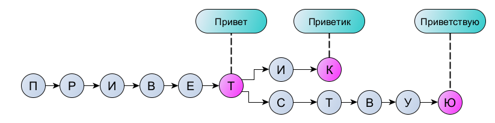
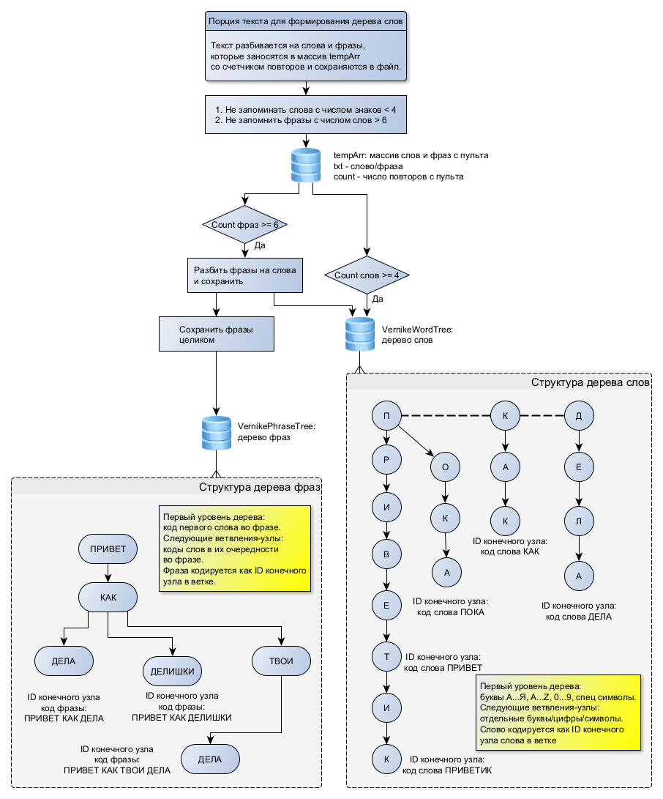
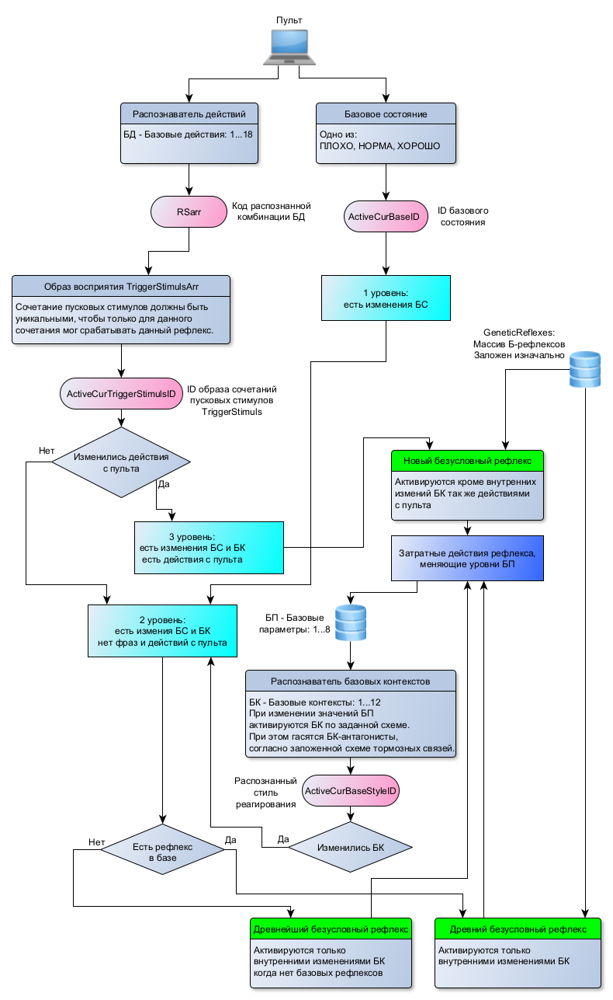
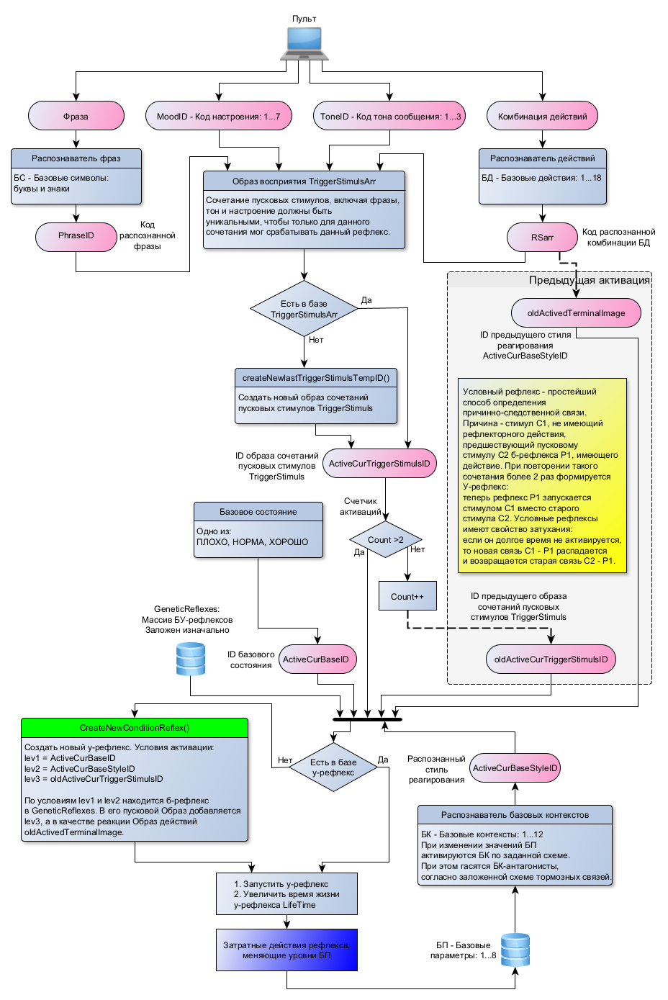
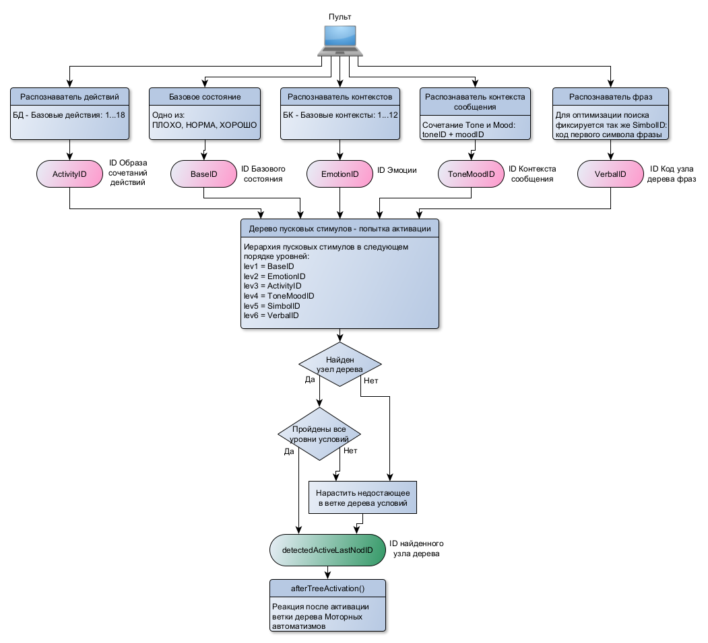

Оглавление
Эволюция
адаптивных функций на основе гомеостаза: прототип. 1
Краткое
описание проекта. 1
Новый
инструмент. 1
Это – не
просто очередная компьютерная эмуляция проявлений разумности.. 1
Трудности
реализации.. 1
Причем здесь
нейроны?. 1
Есть ли разум
у Beast 1
Есть ли
самоощущение у Beast 1
Для желающих
присоединиться. 1
О
предшествующей реализации.. 1
Особенности
новой версии реализации. 1
Используемые
принципы теории адаптивных систем.. 1
Главные
принципы адаптивной регуляции поведения. 1
Информационный
принцип эволюции адаптивности. 1
Принцип
использования уникальных символов образов. 1
Принцип
древовидного распознавателя. 1
Принцип
сопутствующей образу значимости.. 1
Принцип
фиксации Правил. 1
Принцип
доминирующей нерешенной проблемы.. 1
Реализованные
уровни адаптивности.. 1
Особенности
программной реализации.. 1
Описание
схемы: 1
Общая схема: 1
Базовая
структура. 1
Проект не
эмулирует, а представляет собой живое существо. 1
Сенсорные
распознаватели.. 1
Эффекторы.. 1
Две области
моторного терминала уровня психики: 1
Ментальные
управляющие действия. 1
Область
наследственно предопределенных реакций.. 1
Безусловные
(наследственные) рефлексы.. 1
Древние
безусловные рефлексы.. 1
Условные
рефлексы.. 1
Для
образования условных рефлексов необходимо. 1
Условия
затухания условного рефлекса. 1
Алгоритм
формирования условного рефлекса. 1
Распознавание
условного рефлекса. 1
Общее
описание реализации. 1
Автоматизмы.. 1
Автоматизмы
– новое понятие для академической науки.. 1
Общее описание
реализации. 1
Рефлексы
мозжечка. 1
Дерево
понимания. 1
Правила. 1
Объекты
произвольной значимости.. 1
Эпизодическая
память. 1
Модели
понимания. 1
Смысл новых
слов. 1
Адаптационный
потенциал Системы Информационного Окружения (СИС) 1
Четыре
уровня обработки информации актуальных объектов внимания. 1
Ментальные
автоматизмы и циклы ментальной рекурсии.. 1
Доминанта
нерешенной проблемы и гештальт. 1
Планы
дальнейшей реализации.. 1
Описание
основных направлений. 1
Почему
обезьяна никогда не станет человеком (или почему так важно найти оптимальную
версию данного уровня адаптивности). 1
Что дальше?. 1
Если очень коротко, то реализована действующая в реальном
времени модель живого существа (см. терминологическое определение) с
потенциалом адаптивности, характерном для 3-5-летнего возраста ребенка, но с
ограниченными каналами восприятия: только словесный ввод и пара десятков
раздражителей условного значения. У существа, названного Beast
(тварь), есть собственный гомеостаз с 8-ю жизненными параметрами, откуда и
начинается вся индивидуальная система адаптации.
Проект не эмулирует, а представляет собой живое существо
(fornit.ru/64924) несуществующего в природе вида.
Осуществлена схемотехническая реализация (программным
методом) прототипа эволюционной иерархии адаптивных функций от системы
гомеостаза и безусловных рефлексов до доминанты нерешенной проблемы. Теоретическая
модель основывается на накопленном массиве фактических данных исследования
и собственных обобщениях.
Были уточнены условия и свойства условных рефлексов, внеся
терминологическую ясность в определения этого вида реагирования. Затем были схемотехнически
проработаны и реализованы эволюционно более сложные механизмы адаптивности.
Главной задачей проекта была верификация теоретической
модели (fornit.ru/7431) методом моделирования эволюционно усложняющихся
принципов адаптации по фактическим данным исследования природных механизмов.
Т.е. ставилась задача не изобретать что-то новое, а как можно точнее воспроизвести
уже оптимизированные природой принципы. Этот путь ограничивается только
наличием доступных данных исследований для их обобщения.
Основой реализации был взят принцип использования
информационных данных предшествующего уровня механизмов адаптивности для
функционирования более эффективных последующих. Было прослежено, что количество
информации различных видов, образующейся при активации данного уровня
адаптивности, растет лавинообразно в зависимости от порядкового номера уровня и
к пятой стадии развития достигает неисчерпаемости возможностей использования
такой информации.
Были унифицированы такие понятия как образ восприятия, образ
действия и образы промежуточных данных. Это позволяет использовать не всю
совокупность активных данных, а только их уникальные числовые идентификаторы,
символизирующие всю совокупность данных (как говорят в нейробиологии –
кодирование номером связи детектора, а не всем профилем активности на его входе).
Такое решение – основа построения последовательных слоев природной нейросети,
где каждый нейрон символизирует всю активность его рецепторного поля, на
которое он настроен, и сигнал нейрона символизирует распознаваемую активность
на его входах.
Для определения значимости текущего объекта восприятия в
данных условиях использовались структуры в форме дерева условий с
использованием уникальных идентификаторов образов для распознавания активной ветки
дерева. В природной реализации такие же функции дерева выполняют слои новой
коры мозга (fornit.ru/43642), оперирующие с образами и поэтому имеющие
фиксированное число слоев по числу уровней распознавания значимых условий. В
проекте реализовано пять видов деревьев.
Проект является инструментом для исследования механизмов,
определяющих субъективные явления и демонстрации базовых принципов построения
систем индивидуальной адаптивности. Это не модель именно человеческой психики,
а пример программной реализации природной нервной системы без привязки к
конкретному виду живого существа.
Самое важное утверждение для всех исследователей систем
индивидуальной адаптивности:
Представляемая система показала себя, прежде всего, как
эффективный инструмент для исследования систем индивидуальной адаптивности. Он
не имеет альтернатив среди всех других существующих инструментов и методов и
позволяет реально оперировать понятиями, определяющими субъективные явления.
Инструмент реализует схемотехнику взаимосвязей
функциональных элементов, не зависящую от особенностей реализации принципов
адаптивности.
Чем отличается данная реализация от всех других попыток
запрограммировать адаптивное поведение?
1. Наличием собственного гомеостаза, определяющего
собственные потребности, цели и направленность поведения.
2. Точным моделированием уровней адаптивности вплоть до
автоматизмов, повторяющая природную систему живых существ сложнее насекомых,
хотя и с более предположительными механизмами высокого уровня адаптивности в
виду практически полного отсутствия фактических данных исследований таких
уровней.
3. Целостной организацией всей иерархии механизмов
адаптивности.
Система не дается в готовом виде, ее необходимо поэтапно развивать.
В проекте различаются следующие стадии:
0. До рождения
– формируется система Гомеостаза, задаются начальные параметры, формируется
база безусловных рефлексов.
1. Рождение –
формируется база условных рефлексов, развивающая поведенческие навыки.
2. Модификация –
на основе безусловных и условных рефлексов формируется база автоматизмов.
3. Подражание –
добавляются скопированные действия Оператора как авторитарный вариант
реагирования.
4. Осмысление –
формирование у Beast модели понимания выполняемых действий, их значимости,
собственного самоощущения, первые попытки поиска решений.
5. Инициатива –
активация творческой инициативы, развитие методов поиска решений, провокации
Оператора на нужные Beast действия, формирование доминант нерешенных проблем
Каждый этап строится на основе предыдущего. Нельзя
перескакивать этапы и не желательно откатывать их обратно – это чревато
каскадным обрушением накопленных поведенческих навыков с непредсказуемыми последствиями.
Поэтапное развертывание системы имитирует ее эволюционное развитие, где
очередной виток спирали это - всегда продолжение предыдущего.
Если при разработке механизмов разных видов рефлексов и
автоматизмов есть очень много фактических данных исследований и картина вполне
ясна, то уровень механизмов психики оказывается в полном тумане противоречивых
и вообще не определенных понятий.
Новое в принципе невозможно создать именно потому, что это –
еще не известное. Человек в подавляющем числе случаев использует переданные ему
от других людей понятия и его опыт в основном построен на такой
преемственности. Очень мало случаев, когда удается найти что-то новое и
сформировать свое собственное, самобытное представление. Обычно это бывает
случайно или по аналогии, не зря Леонардо Да Винчи любил черпать идеи,
рассматривая узор трещинок на штукатурке.
Так что формировать систему механизмов психики –
по-настоящему мучительное и скользкое занятие.
В самом начале проект делался как эмуляция нейронной сети,
но почти сразу стало очевидно, что программная реализация, обладая своими
особенностями, вовсе не требует эмуляции нейронов и их связей, что делало бы
схему неоправданно избыточной. Да и мощности персонального компьютера на
хватило бы даже для реализации простейших рефлексов. Главное в прототипе – не
повторение способа реализации, а соблюдение принципов развития природной
эволюции адаптивных механизмов.
В случае, если бы прототип делался как электронное
устройство, без дискретных элементов (нейристоров и синаптических коммутаторов)
было бы не обойтись, они давали бы преимущество перед программной
схемотехникой. И сами приемы схемотехники были бы совершенно иными.
Попытка скомпилировать программную реализацию в виде электронного
устройства тоже была бы чрезвычайно нелогичной. Если схему делать программно,
она должна быть выполнена оптимально используемыми средствами языка, а если
делать на дискретных элементах – то вся конструкция с самого начала была бы реализована
совершенно по-другому. Но в обоих случаях эти реализации демонстрировали бы
одни и те же принципы последовательного усложнения механизмов адаптивности.
Понятие “Разум” определено в статье “ Жизнь ->
Самоощущение -> Разум” (fornit.ru/64924).
Разработка прервана для отчета на стадии пятой ступни
развития. Доминанта нерешенной проблемы еще не реализована (хотя не
представляет теоретической сложности), поэтому уровень текущей реализации Beast не позволяет говорить о том, что в проявлениях ее адаптивных
действий есть то качество, проявляется в психике человека как творчество. Это – в точности так же, как невозможно говорить о разуме у ребенка
до 3-5 лет.
Те фразы, что появляются в ответ на Пульте не осмыслены в
качестве объекта привлечения субъективного внимания в контексте модели
понимания свойств и возможности взаимодействий с этим объектом внимания.
Фразы Beast пока
что отражают непосредственное реагирование, такое же, как и несловесные
действия, реагирование в контексте специфики текущего состояния Beast, и даже с основами базовой произвольности (замена
стандартного реагирования более подходящим). Но каждая фраза зависит от
текущего контекста, т.е. на один и тот же стимул Beast может реагировать совершенно по-разному. Такой способности
нет у игровых “ИИ” и любых других искусственных систем, не имеющих своего
гомеостаза (не живых систем).
Уже есть искусственные системы, проходящие тест Тюнинга
(например, GPT-3 (fornit.ru/49524)), но в них нет произвольности,
определяемой гомеостатическими потребностями (и, тем более целевой
произвольности) и никакая из них не демонстрирует даже контекстной обучаемости
(без гомеостаза не может быть собственной системы контекстов). Такие устройства
создают иллюзию разума настолько убедительную, что даже сотрудник google начал утверждать наличие
разума в их программной разработке (fornit.ru/7360).
Целеобразующая значимость выделяемых вниманием образов есть
у Beast, и она зависит от текущих условий и текущего
собственного состояния, у которого так же есть определенная значимость. Если
согласиться с тем, что термин “смысл” (fornit.ru/7339) означает субъективно
(внутренне, с точки отсчета самой адаптивной системы) оцененную значимость, то
у Beast есть самоощущение.
Так же, как копаясь в живом мозге (что имеют возможность
делать исследователи для подготовки к оперативному вмешательству), никто
никогда не видел некоей сущности, отвечающей за самоощущение или сознание, так
же никто не увидит это при исследовании программной реализации потому, что
самоощущение – это информационное отражение значимости воспринимаемого самой
адаптивной системой, это фантом, иллюзия, порождаемая внешне наблюдаемыми
реакциями и это – иллюзия, порождаемая самонаблюдением той сложной организации
взаимодействующих значимостей объектов внимания, которая сложилась к моменту,
когда вообще становится возможно самонаблюдение. И достаточно легко провести
мысленные опыты над собой, пытаясь проследить за конкретно ощущаемой
(учитываемой в реакциях) значимости простейших объектов внимания, таких как,
например, зеленый цвет (fornit.ru/5170), который будет иметь разительно разную
значимость в разных условиях: трава, ядовитая слизь, ягода, сигнал светофора и
т.п.
Проект в настоящее время полностью открыт для всех желающих
соучастников или да самостоятельного продолжения разработки, код схемы Beast и Пульта связи – доступны в
виде репозиторий:
Описание Пульта и схемы опубликованы:
https://scorcher.ru/adaptologiya/beast/beast_scheme/index.htm
Сам Пульт в виде локального сайта с исполняемым файлом Beast можно скачать с Яндекс-диска:
https://disk.yandex.ru/d/7az4UW4XG99kDQ
Достаточно просто скачать в любое место, не
переименовывая папку и прочесть как запустить сайт http:go на своем компьютере.
Соучастники очень нужны в качестве воспитателей Beast и это не требует понимания кода, но нужно хорошо
понимать, что и как формируется на каждой стадии развития Beast.
В варианте, закаченном на Яндекс-диск, Beast развита методами избыточной искусственной накачки, что не
является оптимальным. Но в Пульте есть возможность загрузить и другие этапы
памяти или же вообще все начать с самого начала.
Прошлый отчет о реализации прототипа системы адаптивности
был опубликован (fornit.ru/49721) в январе 2021 года и за ним последовали
несколько иллюстративных статей в попытке облегчить понимание субъективных
ощущений. Так же была опубликована статья в журнале ВАК: (39-я
страница, PDF).
С позиций
достигнутого понимания были опубликованы комментарии к статье К.В.Анохина -
«Когнитом: в поисках фундаментальной нейронаучной теории
сознания»: fornit.ru/50322 и комментарии к книге Дэвид Иглмен Мозг: «Ваша личная
история»: fornit.ru/50204.
Это продемонстрировало текущий уровень понимания адаптивных
явлений ведущими представителями академической науки и показало, что они
по-прежнему пытаются найти ответы на вопросы без использования схемотехнического
подхода, а это так же безнадежно, как попытки понять устройство телевизора
методами биологии.
Ранее в книге “Что такое Я” (fornit.ru/40830) было
доказательно показано, что мозг является сложным схемотехническим устройством,
в котором воплощены все основные принципы именно электронной схемотехники. Это
означает, что исследование устройства адаптивных механизмов мозга относится к
предметной области “электронная схемотехника”.
Основные принципы электронной схемотехники могут быть
реализованы в схемах программной реализации, что и было проделано при
разработке первой версии прототипа.
При этом с очевидностью стало ясна необходимость отказа от
эмулирования функций нейронов, которая безальтернативна в случае реализации
прототипа на дискретных элементах в виде электротехнической схемы.
Наконец была написана статья “Что дальше” (fornit.ru/50246),
где оценены плюсы и минусы проекта.
Первая реализация отличалась поиском оптимальных решений на
уровне принципов, многое было сделано довольно опрометчивыми наскоками. Но был
получен главный результат: уверенность в безальтернативности схемотехнического
подхода в исследовании механизмов индивидуальной адаптивности.
Стоит заметить, что в природе многие функции адаптивности
решаются вовсе даже не с помощью нейронных механизмов, а сами нейронные
структуры далеки от унификации и на функциональность влияют очень многие
факторы, даже не связанные с метаболизмом. Это очень сильно мешает отделять
непринципиальную часть механизмов, и многие исследователи даже не делают такие
попытки, что мешает построению целостной системы принципиальных представлений.
Отказ от привычного представления адаптирующихся систем в
виде нейросети существенно снизил ресурсные требования к мощности компьютера.
При этом стало очевидно, что только схемотехнический подход позволяет уверенно
продвигаться в реализации механизмов индивидуальной адаптивности.
Во втором подходе к разработке прототипа было решено весь
код переписать “с нуля”, используя убедительные наработки, реализованные в
первой версии, когда сложилась вполне понятная картина, как все лучше делать.
Особое внимание теперь было уделено тому, чтобы реализуемые
механизмы как можно точнее соответствовали фактическим данным исследований,
которые доступны по данным явлениям. Это особенно хорошо удалось при реализации
условных рефлексов. Далее же адаптивные явления оказывались все более скудно
описаны в доступных источниках, так что оставалась лишь канва имеющегося
целостного обобщения МВАП (fornit.ru/7431).
Разработка второй версии прототипа системы индивидуальной
адаптивности показала конкретную причину фиксированного числа слоев колонок
коры головного мозга (fornit.ru/43642). Оказалось, что использование уникальных
идентификаторов образов восприятия различного уровня иерархии позволяет
распознавать текущее состояние условий с помощью фиксированного числа узлов в
каждой ветке дерева распознавания. При использовании самих образов с различным
числом признаков на входе каждого, дерево бы получилось в неопределенным числом
узлов в каждом случае и его сложность сделала бы затруднительным и медленным
распознавание. Так что фиксированное число слоев коры четко коррелирует с
применением уже сформированных видов детекторов образов при распознавании
актуального их сочетания.
Становится достаточно убедительной картина того, что кора
имеет функциональность именно древовидной функции распознавания.
Если в первой версии было использовано только одно дерево,
то во второй – пять деревьев для всех случаях необходимости распознавания
иерархии условий.
Удалось избежать очень продолжительной (сэкономлено 2-3
года) и малопродуктивной стадии формирования условных рефлексов и базовых
автоматизмов, создав избыточные списки основ таких реакций. Это позволило
развить систему значительно дальше базовых автоматизмов.
Создан более удобный и информативный Пульт управления и
более продуманная система ректоров данных для различных стадий развития.
По сравнению с прошлой версией были внесены следующие
изменения:
·
существенно переработана схема определения локального и
интегрального базового состояния
·
доработаны справочники базовых параметров, базовых контекстов,
добавлены схемы взаимных торможений и проверки при заполнении на
непротиворечивость
·
разработаны алгоритмы определения возможных комбинаций базовых
контекстов для установленной схемы гомеостаза
·
доработан справочник действий от Beast
·
добавлен интерфейс быстрой набивки дерева слов и фраз
·
доработаны справочники условных и безусловных рефлексов, добавлен
интерфейс их быстрой набивки через шаблоны
·
добавлен справочник условных рефлексов с интерфейсом быстрого
заполнения через шаблон
·
доработан справочник автоматизмов, добавлен интерфейс их
клонирования от безусловных и условных рефлексов, а так же от шаблона
зеркальных автоматизмов
·
добавлен интерфейс отображения правил, циклов осмысления,
объектов значимости, дерева понимания
·
добавлены программные объекты Образ восприятия, Образ
реагирования, Правила реагирования
·
добавлены 4 новых дерева распознавания уникального сочетания
условий
·
добавлен модуль обмена данных до уровня условных рефлексов
включительно
Эти изменения позволили продвинуться значительно дальше,
подтвердив принцип схемотехнического подхода при проектировании систем
индивидуальной адаптивности, который был использован в прошлой версии.
Нейробиологи исследуют механизмы организации адаптивных
функций организмов и описывают их в виде предположительных моделей. Но
большинство таких теорий никак ими не подтверждается проверкой работающими
прототипами устройств.
Ценность представленного материала в том, что не только
отдельные функциональные механизмы, но и вся система индивидуальной
адаптивности представлена в виде работающего прототипа, доказывающего
адекватность ее в реальности, а не только теоретически.
Ценность самого подхода в том, что он дает схемотехнические
методы и принципы реализации любых искусственных живых организмов с желаемыми
свойствами, а также возможности моделировать любые природные живые организмы и/или
отдельные их адаптивные функции.
Пока еще в академической науке не было представлено
целостной теории организации механизмов адаптивности уровня произвольности, тем
более с подтверждением прототипом ее работоспособности.
Основы схемотехнической регуляции поведения строятся на
необходимости поддержания в норме жизненных параметров.
Но авторитарные оценки поведения имеют преимущественное
значение, даже если они идут в противоречии гомеостатической регуляции потому,
что они отражают уже имеющий реальный опыт, подлежащий отзеркаливанию.
Формирование собственной произвольности основывается на
авторитарных оценках, но на определенной стадии развития авторитарные оценки
начинают вызывать сомнение и переосмысливание (если ситуация не критически
опасна).
На всех уровнях сложности адаптивных механизмов реализуется
один информационный принцип: возможности данного уровня адаптивных механизмов
реализуют ту информацию, которая оказывается доступной на данном уровне.
Реализация же данного уровня готовит новые виды информации, которая позволяет
более качественно адаптироваться и которая используется на боле высоком уровне
адаптивных механизмов.
Это – достаточно очевидный принцип: эволюционные
эксперименты ограничиваются теми возможностями, которые представляются
имеющейся сенсорикой. И найдя все возможные пути реализации этой сенсорики,
появляется новый уровень сенсорики, порожденный результатами работы предыдущего
уровня.
В результате реализации Beast
показано, что за такими уровнями адаптивности как безусловные рефлексы,
условные рефлексы, автоматизмы существуют много неописанных в академической
науке уровней адаптивности, неожиданно много для тех, кто об этом системно не
задумывался. Так что для достижения высших психических уровней оказалось
необходимым реализовать все необходимые промежуточные состояния систем
адаптивности. И эта необходимая закономерность, прежде всего, прямо вытекает из
того, как используется информационная сенсорика на каждом из таких уровней,
подготавливая возможность функционирования следующего уровня.
Каждый нейрон головного мозга, имеющий некоторое рецепторное
поле, на избирательную активность которого нейрон специализирован, на выходе
имеет сигнал, символизирующий активность всего профиля возбуждения нейрона.
Этот уникальный среди всех других сигнал (потому как идет от единственного
конкретного нейрона) заменяет собой совокупность активности многих
предшествующих рецепторов, сколько бы их ни было. Это позволяет в дальнейшем
использовать единственный сигнал в качестве информации о всей предшествовавшей
активности и минимизировать условия возбуждения последующих структур.
В схеме проекта использовались такие же уникальные символы
образов различного вида – цифровые идентификаторы детекторов образов. Это
позволило применять фиксированное число узлов веток дерева распознавателей
совокупного уникального образа, который так же получал свой уникальный
идентификатор.
В типичных реализациях “глубоких нейросетей” не используется
такой принцип потому как там сеть построена по принципу “все связаны со всеми”
через несколько промежуточных слоев. Это, с одной стороны, дает идеально точный
распознаватель, но не более того. Требуется огромное число предъявлений для
обучения такого распознавателя, требуются мощные вычислительные ресурсы для
обсчета огромного количества связей и на распознавательной функции его
применение ограничивается.
Чтобы распознать уникальное сочетание активностей сигналов
нескольких иерархически усложняющихся типов лучше всего подходит структура
дерева, где каждая ветка состоит из фиксированного числа видов образов. В таком
дереве находится место для любых сочетаний исходных образов, поиск по дереву –
самый быстрый вид поиска, требуется минимальные вычислительные ресурсы в случае
применения рекурсивного прохода веток дерева (вида обратной связи). Узнавание
любого сочетания достигается при числе итераций, равном числу использованных
видов образов.
У любого образа в дереве распознавания условий появления стимула
всегда есть та значимость, которую ему придает активный базовый контекст
функциональности гомеостаза (негативный, нейтральный или позитивный). Но, кроме
того, с образом действия (реакцией) может ассоциироваться значимость результата
реакции, который вызовет изменения жизненных параметров. Таким образом
получается значимость до реагирования и после реагирования, что позволяет
выделить эффект реакции: позитивный или негативный.
Если есть информация о значимости состояния до реагирования
на стимул и эффект реакции, то становится возможным сохранить правило: Стимул ->
Ответ -> Эффект, полезное для последующего нахождения решения как
реагировать в схожей ситуации.
Кроме того, сохранение цепочки типа Ответ -> Стимул дает
ученическое правило: как реагируют другие на такой Ответ, что так же возможно
использовать для предположительной реакции.
Если решение не найдено, но ситуация важна, то может
возникнуть долговременная цель: найти решение такой проблемы.
Соответственно возникают механизмы, активирующиеся, когда
становится возможным вернуться к решению отложенной проблемы. А также
механизмы, оценивающие удачность примененных методов решения. И еще механизмы,
сохраняющие такие правила решений проблем.
Краткое описание реализованных уровней адаптивности не
использует неопределенных понятий и описывает суть возможностей каждого уровня
и то, почему этот уровень становится возможным. В самом общем плане, каждый
новый уровень оказывается возможным потому, что предыдущий подготавливает новую
информацию, которую становится возможным использовать в новом качестве и
эффективности адаптивности.
1. Наследственно предопределенные структуры.
Виды доступной сенсорики:
образ совокупного пускового стимула из детектора текущего состояния.
Краткое описание адаптивных
механизмов: Это – система гомеостаза и система базовых контекстов
(стилей) поведения, а также сенсорика фраз и сенсорика действий с Пульта.
Порождаемые виды сенсорики:
Образы сочетания действий, образы фраз, образ значимости состояния.
2. Новые условия ранее имеющихся действий (синонимы
реакций или условные рефлексы)
Виды доступной сенсорики:
причинно-следственная связь: сначала стимул от детектора текущего состояния,
потом пусковой стимул.
Краткое описание адаптивных
механизмов: детектор нового, детектор причинной связи нового образа
стимула и старого образа стимула, для которого уже имеется ответное действие.
Механизмы закрепления новой реакции - синонима старой и ее угасания.
Порождаемые виды сенсорики:
к предыдущей сенсорике добавляется детекция нового.
3. Отзеркаливание авторитарных действий.
Виды доступной сенсорики:
авторитарный стимул с Пульта в ответ на действия Beast.
Краткое описание адаптивных
механизмов. На ранней стадии развития все стимулы с Пульта имеют высокую
значимость как пример действий в данных условиях. Они достаточно просто могут
формировать пробное действие в форме пробного автоматизма, т.е. в случае
ухудшения состояния после такого автоматизма он будет блокирован, а в случае
улучшения – составит новый опыт.
Порождаемые виды сенсорики:
к предыдущей сенсорике добавляются примеры действий в статусе высокой
значимости.
4. Оценка полезности реакций (автоматизмы)
Виды доступной сенсорики:
новизна ситуации (отсутствие реакций для данного сочетания условий и стимула),
детектор актуальности реагирования, детектор опасности ситуации.
Краткое описание адаптивных
механизмов: при каждой новизне в текущей оценке ситуации запускаются
механизмы образования пробного автоматизма, с использованием доступной
информации. Кроме того, если автоматизм уже есть для данной ситуации, но он
плох, то также начинается подбор нового автоматизма.
Порождаемые виды сенсорики:
к предыдущей сенсорике добавляется образ возможного действия.
5. Оценка эффекта (полезности) совершенного действия
Виды доступной сенсорики:
значимость до совершения действия и значимость после совершения действия в
сопоставлении дают результирующий эффект от действия, который используется для
блокировки автоматизма (негативный эффект) или укрепления уверенности в
применении автоматизма (позитивный эффект).
Краткое описание адаптивных
механизмов: для формирования значения эффекта используется детекторы
состояния «хорошо, норма или плохо», а также детектор разницы значений
предыдущего и текущего состояния «стало лучше, стало хуже».
Порождаемые виды сенсорики:
к предыдущей сенсорике добавляется образы значимости объектов, участвующих в
реакции, а также опыт применения автоматизмов в данных условиях – как величина
полезности в структуре автоматизма.
6. Образы простейших Правил
Виды доступной сенсорики:
образ Стимула из Пульта, образ Ответа Beast, эффект
ответной реакции.
Краткое описание адаптивных
механизмов: фиксируются и сохраняются Правила в виде Стимул -> Ответ
-> Эффект, а также ученические Правила в виде Ответ – Стимул -> +1 (авторитарный
эффект принимается за 1).
Порождаемые виды сенсорики:
к предыдущей сенсорике добавляется наборы правил и новые звенья эпизодической
памяти, хранящие образ ситуации и последовательность примененных Правил.
7. Образы значимости объектов воспринимаемого
Виды доступной сенсорики:
оценка значимости пробного реагирования.
Краткое описание адаптивных
механизмов: для каждого совокупного образа и каждого составляющего образа
ассоциируется значимость эффекта реакции, что позволяет выбирать наиболее
значимые позитивные реакции и остерегаться негативных.
Порождаемые виды сенсорики:
к предыдущей сенсорике добавляется образы значимости, ассоциированные с
образами действий и его отдельных составляющих.
8. Определение текущих целей по Правилам для наиболее
значащих объектов внимания
Виды доступной сенсорики:
Правила двух видов и эпизодическая память.
Краткое описание адаптивных
механизмов: становится возможен прогноз последующих действий после
совершенных – по цепочкам сохраненных Правил. Прогноз позволяет определить цели
следующих действий.
Порождаемые виды сенсорики:
к предыдущей сенсорике добавляется ментальные цепочки удачных и не удачных
решений: ментальные Правила последовательности нахождения решений.
9. Автоматизмы «внутренних» действий.
Виды доступной сенсорики:
наследуемые механизмы различных информационных функций для получения информации
и принятия пробного решения – базовая основа функционала коры лобных долей (в
отличие от цепочек безусловных рефлексов – как основы функционала теменной
области коры).
Краткое описание адаптивных
механизмов: “внутренние” действия или ментальные автоматизмы позволяют
активировать те или иные информационные функции в порядке имеющихся правил или
попытках создать новые – с целью получить желаемый прогнозированный эффект и
создать моторный автоматизм.
Порождаемые виды сенсорики:
к предыдущей сенсорике добавляется наработанные опытом ментальные автоматизмы с
их образами “внутренних” действий.
10. Рекурсивные циклы информационной адаптивности.
Виды доступной сенсорики:
основная информационная функция мышления позволяет осуществлять циклы вызовов
ментальных автоматизмов по ментальным Правилам или создавать новые цепочки
пробных Правил.
Краткое описание адаптивных
механизмов: каждый вызов модифицирует общую информационную картину для
возможности работы последующего вызова. Функция мышления активируется по
каждому стимулу с Пульта и между ними может проходить неограниченное (для 5-й
стадии развития) число рекурсивных ментальных вызовов. Объектом внимания в этой
функции становится наиболее значащий объект.
Порождаемые виды сенсорики:
к предыдущей сенсорике добавляется постоянно обновляемая с каждым событием
полная информационная картинка текущего состояния – самоощущение.
12. Доминанта нерешенной проблемы.
Пока еще не реализованный функционал 5-й стадии развития, но
уже имеются соответствующие структуры.
С 5-го пункта перечисленных уровней адаптивности возникает общее
информационное окружение, которое позволяет использовать его данные для все
более эффективного нахождения ответных действий. Информация здесь – термин,
означающий получение сведений о значимости объектов иерархии усложнения
образов. Beast реально
оказывается информированной о таких значимостях, что позволяет 1) обращать
внимание на наиболее значимое и 2) находить решения по улучшению значимости.
Опыт прошлой реализации выявил множество неоправданных
недоработок языка golang и в
новой версии уже нет попыток использовать многопоточность, приняты меры против
одновременной записи и чтения “карт”, но, все же, несмотря на проблему
цикличности включений пакетов, пакеты собраны в папки (кроме последнего пакета psychic, где файлы навалены в одну папку).
Основным элементом для создания образов различного вида
является “структура”. Функции сохранения объектов образов и загрузки их из
файлов настолько унифицированы, что становится возможным создать для этого
универсальную функцию (пока не сделано). Это же касается функций работы с
деревьями.
Всякий раз учитываются возможные размеры файлов памяти и
нагрузка при работе функций так, что есть немалый потенциал для накопления
данных и работы с ним. Избыточность искусственно созданных данных позволила
оценить такой предел для персонального компьютера средней мощности.
Схема Beast получилась
достаточно сложной и поэтому сделано описание функций по пакетам и в виде общей
графической схемы. Но понять схему без ясного представления ее функциональности
– нереально. Так что в данном отчете будет такое общее описание.
Описание
схемы подразделяется на описание схемы Beast и кода Пульта.
Графическая блок-схема Beast
Варьируя базовые прошивки, эволюция создала огромное
множество вариантов живых существ, различающихся особенностями наследственных
механизмов адаптации. Различия начинаются от качества и возможностей
рецепторных датчиков воздействия и кончая самыми эволюционно молодыми
образованиями. Но никакие наследственные механизмы не справляются со сложными
особенностями окружающих условий и воздействий. Поэтому множество механизмов
адаптивности закладываются наследственно так, чтобы иметь возможность уточнить
их реакции в период активной жизни особи. Они, естественно, имеют приоритет
перед более древними реакциями и принцип такой приоритетности прослеживается на
всех уровнях системы индивидуальной адаптивности.
В проекте основой распознавания иерархии образов является
Дерево.
Чем меньше образов на данном уровне ветки дерева, тем более
надежно распознавание в природных (и любых дискретных) сетях и тем более
быстрый поиск в программных (последовательный алгоритм обработки). Эффект
использования усложняющихся образов проявляется в фиксированном числе уровней
(слоев колонок fornit.ru/43642).
Т.к. задается определенная наследуемая структура, то
возникает возможность размножения с использованием наследственных структур
партнеров, которые по заданному алгоритму обогащают и усредняют наследственную
структуру нового существа. В проекте начато развитие такой функциональности.
Понятие живого существа сложилось из обобщения наблюдаемых
признаков живых существ. Мы уверенно различаем в этом смысле камень, наколотую
на булавку бабочку от живой бабочки. Стоит таким признакам стать
неопределенными, и мы говорим: “как живое” или “как камень”.
Есть наиболее общий признак, который и наделяет все живое наблюдаемыми
характеристиками живого (fornit.ru/64924). Это – наличие системы гомеостаза с жизненными
параметрами, выход которых из нормы означает приближение к смерти – к неживому.
Если такой выход оказывается более невосполнимым, то существо становится
мертвым. Живое же существо всем своим поведением в конечном счете восполняет
нарушения параметров гомеостаза у себя или у значимых для него других особях,
тем самым поддерживая жизнь вида.
Для параметров гомеостаза, напрямую не связанных с
жизнеобеспечением (гон, потребность в общении, потребность в обучении и
любопытство) организована цикличность: при нарастании параметра до максимума,
он удерживается в течении 20 секунд, а потом сбрасывается. Это позволяет
создавать достаточные по времени периоды специфических контекстов реагирования.
Сенсоры восприятия Beast бывают вербальные (слова и фразы) и невербальные
(настроение, тон, стимулирующие воздействия). Этим и ограничивается диапазон
видов восприятия Beast, т.е. видеть, слышать,
чувствовать вкус и запах у него возможности нет.
Вербальные сенсоры Beast это текстовые фразы, посылаемые с
Пульта оператором. Они имеют иерархическую древовидную структуру, где каждый
сенсор представлен в виде ветки дерева. Это позволяет существенно ускорить
поиск и автоматически группировать сенсоры по совпадающим фрагментам. Например,
слова: «привет – приветик – приветствую» имеют общий фрагмент «привет», от
которого идут 2 ответвления. Конечное звено ветки определяет уникальный сенсор,
а первое принадлежит начальному уровню дерева, представленному в виде букв
алфавита и спец. символов.

Наиболее сложным в проекте сенсором является распознаватель
слов и фраз – “ Вернике-детектор”, реализованный с помощью дерева распознавания
слов и дерева распознавания фраз.
Дерево слов распознает слова по отдельным символам, включая
разделители слов и символы окончания фразы. Поэтому ветка дерева слов не
лимитирована по числу узлов-символов.
Дерево фраз так же имеет нелимитированную ветку потому, что
во фразе может быть сколько угодно слов. Но при появлении символа разделителя
фраз, возникает новое распознавание и активируется ветка следующей фразы. Так
если с Пульта будет послан текс из нескольких фраз, то возникнет образ
совокупности таких фраз.
Слова сохраняются как узнанные образы тогда, когда они
встречаются более 3-х раз. Это сделано чтобы отсеять мусорные, случайные сочетания
символов и имитирует постепенное формирование профиля распознавания нейрона по
нескольким предъявлениям стимула.
Из полученных сенсоров-слов формируется второй тип сенсора –
фразы, ограниченный длиной не более 6 слов. Таким образом Beast получает
возможность уже на рефлекторном уровне реагировать как на отдельные слова, так
и на фразы.

Предусмотрена возможность быстрой набивки заготовленных
текстов без 4-кратного повторения, чтобы создать некий начальный словарный
запас узнаваемых слов. На Пульте для этого есть галка “режим форсированной
обработки”.
Вернике-детектор позволяет распознавать слова, написанные не
точно, так же как это происходит и в природной зоне Вернике: важно, чтобы
точными были только первый и последний символ, а промежуточные могут быть
перемешаны. Похожий “мягкий” алгоритм реализован и при распознавании фраз, так
что узнается наиболее похожая фраза из ранее сохранных образов.
На Пульте есть редактор быстрой набивки фраз и показа
результатов распознавания: структуры дерева слов и дерева фраз.
Кроме того, с Пульта можно посылать стимулирующие действия с
помощью кнопок под блоком ввода текстов. Эти кнопки имеют позитивное или
негативное воспитательное воздействие, особенно кнопки “Наказать” и “Поощрить”.
Перед отсылкой фразы можно сначала набрать сочетание
стимулирующих действий (не более двух), а также уточнить тон и настроение
оператора. И тогда будет распознан обобщенный стимул, состоящий из отдельных
компонентов. Такой стимул имеет свой уникальный идентификатор и участвует в распознавании
текущей ситуации в составе веток трех деревьев: рефлексов, автоматизмов и
общего дерева понимания ситуации.
В редакторе Пульта “Действия” могут быть предопределены “наследственно”
сформированные действия. Причем, первая часть таких действий отражает уже
имеющиеся кнопки стимулирующих действий для того, чтобы иметь возможность
отзеркалить их у оператора. В редакторе эти действия не могут удаляться (но
могут меняться их названия), они имеют светло-серый тон.
Практически все описанные в виде
слов и фраз действия - в природе реализуются цепочками безусловных рефлексов
(инстинктами). Так что под каждым названием действия подразумеваются все
необходимое для выражения данного действия в природе.
Кроме наследственно предопределенных действий (редактируются
до стадии рождения) формируются образы действий для адаптивных функций
реагирования.
Область Брока VerbalFromIdArr=make(map[int]*Verbal) отвечает за смысл распознанных слов и словосочетаний,
за конструирование собственных словосочетаний, за моторное использование слов и
словосочетаний.
За все это ответственна структура - образ осмысленных слов и
сочетаний.
Область моторных действий ActivityFromIdArr=make(map[int]*Activity) отвечает за смысл распознанных действий с Пульта,
за конструирование собственных последовательностей действий, за моторное
использование действий.
За все это ответственна структура - образ осмысленных
действий и их сочетаний.
Кроме моторных действий есть ментальные действия: управление
элементами системы адаптивности. Для них так же предусмотрена структуры для
сохранения объектов таких образов управляющих действий.
Принципиальное отличие Beast от проектов, использующих различные технологии ИИ – это
наличие системы индивидуальной адаптивности на основе жизненных параметров. К
ним относятся:
·
Жизненные параметры – определяют первичную
гомеостатическую цель адаптации, меняют значение под воздействием внешних и
внутренних раздражителей.
·
Базовое состояние – три первичных уровня самоощущения,
направляющих процесс адаптации: Плохо, Норма, Хорошо. Базовое состояние бывает
локальным, для каждой Базовой потребности, и интегральным, на основе локальных
состояний всех Базовых потребностей. Жизненное состояние Beast всегда находится в одном из Интегральных базовых состояний.
·
Порог выхода из нормы – значение Жизненного параметра, пересечение
которого изменяет Базовое состояние. Есть локальный Порог для каждой Базовой
потребности, есть общий Порог, определяющий Интегральное базовое состояние на
основе локальных Порогов Базовых потребностей.
·
Базовые контексты – стили реагирования, активирующиеся при
изменениях значений Базовых потребностей и Интегрального базового состояния.
Комбинация текущих активных контекстов образуют гомеостатический Образ
восприятия, запускающий Безусловные рефлексы. Кроме того, существуют тормозные
связи между Базовыми контекстами, задающие пары контекст – антагонист, которые
не могут быть одномоментно активны.
·
Базовые действия – активные действия с Пульта, посылаемые
оператором, и воздействующие на Базовые потребности, изменяя их значения.
Оператор, через Базовые действия Пульта меняет значения
Базовых параметров, что вызывает изменения Базовых контекстов, провоцирующих
изменение Базового состояния и активацию Безусловных рефлексов. Рефлексы в
качестве ответной реакции запускают аналогичные Базовые действия. В результате
образуется система индивидуальной адаптации: действия оператора изменяют
Базовое состояние Beast, ответные действия рефлексов,
спровоцированные действиями оператора, стабилизируют эти изменения.
В физиологии есть понятие “безусловного рефлекса” – моторной
реакции в ответ на определенные условия, так что это следовало бы назвать “условными
рефлексами”, а то, что называют” условными рефлексами” следовало бы назвать “рефлексами-синонимами”.
Но кроме таких реакций наследственно предопределено огромное
количество других видов структур, для которых упущена какая-то классификация.
Эти структуры управляют не внешне наблюдаемыми моторными действиями, а “внутренними”
действиями по управлению элементами системы адаптивности. Наиболее очевидные –
структуры, обеспечивающие формирование рефлексов мозжечка, структуры,
блокирующие выполнение моторных реакций во сне, структуры гиппокампа,
управляющие потоками активностей, выделяя среди них наиболее значимое и
подставляя эту активность структурам лобной коры для информационной обработки.
Огромное разнообразие наследственно предопределенных
структур лобных долей обеспечивают потенциал возможностей информационной
обработки и формирование новых автоматизмов (вот так коротко упомянуто все
разнообразие управляющих структур).
В проекте такие структуры реализованы в виде уже готовых
функций, а также функций, формирующих последовательности управляющих функций,
что является основой осознанной произвольности (fornit.ru/12787). Правомерность
создания таких функций и вообще любых воображаемых функций (полезных и нет
обусловлена тем, что в ходе развития лобных отделов могли возникать и выдержать
отбор полезности самые разные функциональные связи. На основе же удачных и
закрепленных в популяции функций возникало уже новое разнообразие, придавая
особям разный спектр потенциальных возможностей.
Судя по тому, как постепенно удается развивать схемотехнику Beast, в лобных долях возникло множество уровней
последовательной иерархии механизмов управления.
Существует качественно различные стадии
развития личного представления о своем Я и только на пятой из них, в возрасте
5-6 лет начинает формироваться образ “Я” (fornit.ru/64933),
а это – первый и центральный из всех других образов моделей понимания. Это
означает, что существует не меньшее число последовательных уровней механизмов
формирования этих явлений.
Наследственно предопределенные моторные реакции называют
безусловными рефлексами, а их цепочки – инстинктами. В коде они названы GeneticReflex. Наследственно предопределены не только внешне
направленные моторные реакции, но и любые внутренние структуры мозга потому как
любой предшественник данного нейрона – это его рецептор, а последующий нейрон –
эффектор. Условия образования связей универсальны, и наследственная
предопределенность создает множество связей уже подготовленных локализацией
нейронов и их отростков.
Здесь будем рассматривать классический безусловный рефлекс
типа стимул-ответ.
Такой рефлекс характеризуются внешним действием, выполняемым
при определенных условиях (распознается профилем активации рефлекса). Но
действия могут быть не только моторными, но и изменяющими состояние внутренней
среды организма, что дополняет определение наследственного рефлекса. Мало того,
логично сделать определение более универсальным, если учесть не только внешние,
но вообще любые эффекторные активности, то любой нейрон является детектором
рефлекса. Поэтому “безусловными”, точнее наследственно предопределенными
являются любые функциональные механизмы мозга.
Но чтобы оставаться в соответствии с классической
классификацией, ограничим определение “безусловных рефлексов” рефлексов только
мышечными действиям.
Распознавание актуального рефлекса в зависимости от условий
происходит деревом рефлексов, активная ветка которого имеет уникальный
идентификатор образа рефлекса в данных условиях. На Пульте дерево рефлексов
можно видеть на странице “Редактор безусловных рефлексов”.
При реализации механизмов безусловных рефлексов
рассматривались следующие аспекты.
1. Стоит иметь в виду, что предопределенные генетически
рефлексы в природе не возникают сразу в виде эффективных нейроцепей пока не
возникнет ситуация, отвечающая условиям такой актуализации.
2. При каждом запуске возникает довольно ресурсоемкий
процесс проверки всех рефлексов, сопоставляя с деревом. Даже если добавляется
новый рефлекс, то он довешивается уже в этом процессе.
3. Трудно отслеживать получающуюся картину и понять, почему
иногда не отрабатывают отдельные рефлексы, а в другом случае – отрабатывают.
Есть такая неприятность: при выходе через Выключить Beast нормально записывается накопившееся в файлы памяти, а при
остановки из дебаг-версии IDE –
этого не происходит (не отрабатывает main.
cleanupFunc()).
Учитывая все это, была убрана функция, заранее заполняющая
дерево рефлексов по имеющимся рефлексам из писка редактора безусловных
рефлексов, и дерево рефлексов (и образы сочетаний) заполняется по мере реально
встречающихся рефлексов.
Безусловные рефлексы получились в своем процессе
формирования полностью соответствующими природной реализации. Но действия Beast, описанные на странице Пульта “Действия Beast”, по смыслу их названий представляют собой не одиночный
моторный рефлекс, а целую их совокупность, то, что называется инстинктами.
Так названы первичные реакции, возникающие при формирование
связей с эффекторами. По закону формирования связей между нейронами,
пейсмеккерная активность созревших, но не имеющих рецепторной специализации
эффекторов, может сочетаться с активностью уже имеющихся рецепторов, образуя
первичную специализацию.
В редакторе Пульта “Действия Beast”
действию может быть придана первичная связь: “Какие ID гомео-параметров
улучшает действие”. Имеется в виду, что то или иное действие может влиять на
жизненные параметры в лучшую сторону и быть полезным при активации. Поэтому
становится возможным при текущем состоянии жизненных параметров определять
улучшающие их действия. Это и названо древними, простейшими безусловными
рефлексами. Эти рефлексы имеют преемственное значение в реализации схемы Beast – для одного из методов формирования новых
автоматизмов.
Безусловные рефлексы у Beast – это жестко
запрограммированные реакции на действия кнопок с Пульта. Такая система
реагирования задается в первичной 0 стадии до рождения Beast
на странице “Рефлексы” через заполнение справочников и шаблонов. По аналогии с
природной нервной системой это - закрепленные эволюционным отбором не
изменяемые и не угасаемые реакции.
Рефлекторное реагирование происходит разово при возникновении
пусковых условий, формирующих итоговый Образ восприятия TriggerStimulsArr из
трех видов сенсорики:
1.
Изменение Базового состояния – если изменилось базовое состояние
Плохо, Норма, Хорошо
2.
Изменение Базовых контекстов – если изменилось сочетание текущих
активных базовых контекстов
3.
Изменение Пусковых стимулов – если было активировано сочетание
кнопок действий с пульта
Комбинация трех уровней Образа восприятия учитываются только
в порядке, указанном выше, задавая тем самым древовидную структуру Образа
восприятия. Это означает, что возможны комбинации Базового Состояния и Базовых
контекстов, без учета Пусковых стимулов, но не возможны комбинации Базового
Состояния и Пусковых стимулов без учета Базовых контекстов. Образ восприятия
всегда формируется в порядке: Базовое Состояние – Базовые контексты – Пусковые
стимулы.
Это в свою очередь задает иерархию активации трех типов
безусловных рефлексов:
1.
Древнейший безусловный рефлекс – активируется на сочетание
изменений Базового состояния и Базовых контекстов, как внутренняя пассивная
стабилизирующая реакция. Определяется по данным редактора на Пульте “Действия”,
в колонке «Какие ID гомео-параметров улучшает действие». Служит реакцией «по
умолчанию», когда нет подходящего Образу восприятия рефлекса. В этом случае Beast по текущей проблеме (какие
Базовые потребности вышли из Норма) по данным справочника находит и активирует
нужные действия.
Изменения сочетаний Базовых контекстов в
ответ на изменения уровней Базовых параметров это - тоже безусловный рефлекс,
заданный так же не явно через справочники на странице “Гомеостаз”.
2.
Древний безусловный рефлекс – активируется на сочетание изменений
Базового состояния и Базовых контекстов, по данным редактора рефлексов, где не
заполнен столбец Пусковых стимулов.
3.
Классический безусловный рефлекс – активируется полным пусковым
Образом восприятия, когда есть изменения Базового состояния, Базовых контекстов
и Пусковых стимулов.
Активизация происходит по правилу: если активны все три
уровня Образа восприятия, ищется Классический безусловный рефлекс, если только
первые два – Древний безусловный, если ничто не нашлось – древнейший
безусловный. Таким образом на изменение сочетаний Базовых контекстов и Базового
состояния всегда будет как минимум реакция от Древнейшего безусловного
рефлекса.

Выполнение Безусловного рефлекса означает выполнение
действий, параметры воздействий которых задаются в редакторе “Действия”.
Собственно, в этом и состоит гомеостатическая цель рефлекса – спровоцировать
такие изменения вышедших из Норма Базовых потребностей, которые будут
способствовать их возврату в Норму. При этом очевидна ограниченность такого
реагирования: далеко не всегда одиночное действие способствует стабилизации
разбалансированной Базовой потребности, и нет никакой возможности оценить
последствия выполнения рефлекса и улучшить его. Рефлекс всегда будет
выполняться при возникновении пускового Образа восприятия. Единственное, что
можно сделать на этом уровне – через механизм условных рефлексов временно
переопределить Образ восприятия с одного рефлекса на другой. Но полноценная
модификация, вплоть до создания новых вариантов реагирования происходит только
на уровне Автоматизмов.
Для формирования концепции реализации условных рефлексов были обобщены
доступные в источниках определения и описания функциональности этого вида
рефлексов так, что отсеялось то, что не может быть реализовано на данной стадии
развития в виду отсутствия необходимой информации. В результате получилось
следующее.
Для
образования условных рефлексов необходимо
1. Совпадение во времени
(сочетание) какого-либо индифферентного раздражителя (условного) с
раздражителем, вызывающим соответствующий безусловный рефлекс (безусловный
раздражитель).
2. Необходимо, чтобы действие условного раздражителя несколько предшествовало
действию безусловного.
3. Условный раздражитель должен быть не вызывающим значительной самостоятельной
реакции.
4. Рефлекс возникает только после нескольких повторений сочетаний 2
(news_detectior.go: if tempImg.Count > 2 - в func updateNewsConditions(rank
int)), это избавляет от случайных связей.
Условный рефлекс может образовываться на основе безусловного или на основе
имеющегося безусловного, используя действия исходного рефлекса для новых
условий. Такие цепи рефлексов ничем не ограничены.
Условия
затухания условного рефлекса
1. Долгое отсутствие пускового
стимула (узла ветки, с которого он запускается) – это легко реализуется
добавлением в структуру усл. рефлекса lastActivation int – в числе пульсов и
времени протухания истекших рефлексов;
2. Действие конкурентных раздражителей – т.е. подавление конкурентными
рефлексами и автоматизмами – т.е. если есть более значимый рефлекс или любой
автоматизм на тот же пусковой стимул, то он блокирует условный рефлекс. В
структуре условного. рефлекса есть его ранг (число цепочки родителей), чем он
выше, тем рефлекс приоритетнее среди других. Автоматизм приоритетнее любого
рефлекса.
3. При отсутствии «подкрепления» после совершенного действия. Но безусловные
рефлексы не угасают при этом, они безусловны и по отношению к тому, что
происходит после действия и их «подкрепление» – обусловлено наследственной
эволюцией: безусловные рефлексы постоянны, даны от рождения и не угасают на
протяжении всей жизни. У условных рефлексов точно та же функциональная задача,
только с новыми стимулами, значит, им так же не нужно последующее
подкреплением. В литературе часто путается отсутствие подкрепления с
дезадаптацией, а также условные рефлексы и автоматизмы, образующиеся при
осознании.
4. Разные условные рефлексы без подкрепления угасают с неодинаковой скоростью.
Более «молодые» и непрочные условные рефлексы угасают быстрее, чем более
«старые», прочные условно-рефлекторные связи (func conditionRexlexFound).
1. Условный рефлекс возникает там,
где нет безусловного на основе нового стимула N, привязывая к нему действия
того рефлекса (условного или безусловного), которое вызывало реакцию ПОСЛЕ
данного нового стимула M.
2. Но теперь если в восприятии появляется стимул N, то вызываемый им условный
рефлекс перекрывает все рефлексы более низкого уровня, в том числе условные
меньшего уровня.
Так что в структуре безусловного рефлекса предусмотрен параметр: rank int,
который увеличивается, если реакция наследуется от условного рефлекса и тогда
рефлекс с рангом выше, перекрывает все что рангом ниже. По умолчанию у
безусловных рефлексов rank равен 0.
При разработке было выявлено очевидное заблуждение в
классической интерпретации условных рефлексов, утверждающее, что для
поддержания условного рефлекса нужно обязательное подкрепление.
Факт: собака перестает бежать к еде по звонку, если не
видит еду несколько раз после звонка.
Тут действует именно то, что она не видит еду, оценивает
ложность звонка, т.е. у нее не условный рефлекс, а более высокоуровневый
осознанный автоматизм, который исследователи путают с рефлексом. Разные условные рефлексы без подкрепления угасают с
неодинаковой скоростью. Более "молодые" и непрочные условные рефлексы угасают быстрее,
чем более "старые", прочные условно-рефлекторные связи.
Итак, пример: если при прикосновении к миске с водой начало
бить током, у животного срабатывает безусловный рефлекс отдергивания. При
повторении несколько раз сам образ миски с водой начинает вызывать
отдергивание. Это – отличается от классической интерпретации: рефлекс возникает
в результате подкрепления (в данном случае отрицательного). Нет, подкрепление
уже сопровождает базовый рефлекс отдергивания, а не является причиной появления
рефлекса.
Описанный эффект хорошо наблюдать у кошек не слишком умных
пород: они очень трудно поддаются обучению подкреплением, которое предполагает
сопоставление произошедшего с событием подкрепления. Если попытаться отучить
орать кошку по ночам методом кидания тапочка, то кошка воспринимается события поражения
тапком в полном отрыве от своего мяукания, это – для нее – свое, особе событие.
И сочетания “замяукала” - “получила тапком” не происходит ни на уровне
формирования рефлексов (множественным повторением), ни на уровне формирования
осознанных автоматизмов.
Более подробный разбор экспериментов, почему «условный
рефлекс» на самом деле является в большинстве случаев автоматизмом можно
посмотреть здесь.
Условные рефлексы распознаются при активации дерева
рефлексов с помощью функции распознавания условного рефлекса:
1. С помощью findConditionsReflesFromPrase( из всех
у.рефлексов с данным ID образа пускового стимула (imgId3) выбирается тот, что
подходит к данным условиям 1 и 2 уровня.
2. Если на Пульте была вбита фраза, для которой нет imgId3,
то фраза очищается от неалфавитных символов и снова пробуется найти подходящий
imgId3
3. Если все еще нет подходящего imgId3 то фраза
комбинируется: перебираются все сочетания слов до максимального числа, без
перемешивания, не менее чем по 2 слова
4. Если все еще нет подходящего imgId3 то пробуются все
слова фразы, не менее 5 символов.
Это позволяет найти условный рефлекс среди длинной фразы,
например, во фразе "я боюсь тебя" будет найден рефлекс на слово
"боюсь".
С 1 стадии (после рождения) с помощью Условных рефлексов
начинается адаптация в течении жизни одной особи, хотя и ограниченная
существующим набором Безусловных.
Условные рефлексы Beast формируются, если в течении одного сеанса активации (до
момента выключения или перехода в режим сна) было не менее 3 повторов сочетаний
следующей ситуации: перед текущим пусковым Образом, активировавшим безусловный
рефлекс был предшествующий Образ, который ничего не активировал, так как на
него не было рефлекса.
Образ активации Безусловных рефлексов (уникальная ветка
дерева рефлексов) включает в себя Базовое состояние, сочетание Базовых
контекстов и сочетание Базовых действий с пульта (нажатие кнопок действий). Для
Условного рефлекса такой Образ дополняется фразой, тоном и настроением
сообщения с Пульта. Этот Образ, строго говоря, общий для всех типов рефлексов,
просто для Безусловных фраза, тон и настроение не учитываются. Поэтому
Безусловные рефлексы не реагируют на вербальные раздражители, а только на
изменение контекстов и/или действий.
Условные рефлексы это - простейший способ определения
причинно-следственной связи, когда выделяется повторяющаяся пара последовательно
возникающих раздражителей, из нее формируется новый пусковой Образ и он
начинает активировать Безусловный рефлекс. Это позволяет получить реакцию Beast на вербальные раздражители,
если после отправки с Пульта фразы, на которую не будет реакции ввиду
отсутствия рефлекса на такой раздражитель, следующим шагом отправить действие
(нажать кнопки действий), на которые есть безусловно-рефлекторная реакция. Если
такое сочетание повторится не менее трех раз, сформируется Условный рефлекс и
теперь Beast будет реагировать
на фразу как на действия кнопок, хотя они могут и не нажиматься. Потому что, как
и у Безусловных рефлексов, здесь так же есть мягкое распознавание на не полный
Образ восприятия.

Пример формирования условного рефлекса:
·
Оператор (отправляет текст с Пульта): привет
·
Beast: нет реакции
·
Оператор (отправляет действие с Пульта): жмет кнопку
«Обрадоваться»
Цикл повторяется 3 раза, в результате создается Условный
рефлекс: на фразу Оператора «привет» Beast реагирует действием от пускового раздражителя «Обрадоваться»
- [улыбается, смеется]. Можно сделать прошивку Условного рефлекса за один раз,
если активировать на Пульте флажок «Режим форсированной обработки».
Каждый Условный рефлекс имеет «время жизни», при создании
ему дается 30 дней, затем при каждой активации оно удваивается. Если же
активации в течении 30 дней не случилось, время жизни уменьшается на ту же
величину и в конечном итоге, если время жизни обнуляется, рефлекс блокируется.
Таким образом, чем чаще он активируется, тем дольше он живет – укрепляется.
Никаких других «подкреплений», положительных или отрицательных, кроме частоты
активаций у него нет. Это идет вразрез с текущими представлениями о природе и
свойствах Условных рефлексов потому, что все описываемые эффекты, зафиксированные
экспериментально, относятся в основном к автоматизмам, у которых есть оценка
успешности и соответственно механизмы изменения веса уверенности. Рефлекс же по
определению это изначально прошитая неизменная реакция, где не предусмотрено
никаких модификаций. Поэтому Условный рефлекс – предел адаптации на
рефлекторном уровне за счет создания временной связи между новым пусковым
стимулом и существующим рефлексом, которая имеет свойство затухания.
Основное ограничение рефлекторного реагирования в том, что
при таком реагировании никак не учитывается возможная неадекватность Рефлекса
при изменившихся внешних условиях, что означает единственную возможность
адаптации только при смене поколений и удачной новой мутации, формирующей другой,
более подходящий Рефлекс. Для адаптации в течение жизни одной особи нужен
дополнительный маркер в виде оценки изменения Базового состояния: стало лучше
или стало хуже после выполнения ответных действий. Но так как рефлекторное
реагирование, не подразумевающее никаких оценок, и выполняемое в любом случае
при активации Пускового образа, уже не годится, то нужен принципиально новый
тип реакции.
Моторный автоматизм – ответная реакция, способная
модифицироваться (блокироваться, усиливаться) в зависимости от оценки изменения
текущего Базового состояния Плохо/Норма/Хорошо по принципу: стало лучше/стало
хуже. При улучшении Базового состояния после реагирования, автоматизм
закрепляется, при ухудшении - блокируется. Автоматизмы в отличие от Рефлексов,
формируемых эволюционным отбором полезных мутаций, позволяют особи
адаптироваться в течение ее жизни. Автоматизм имеет приоритет активации над
Рефлексом, что означает: Рефлекс активируется, только если нет автоматизма на
аналогичный пусковой образ.
Автоматизмы – слабо освещенная в академических источниках
тема. Обычно их или путают с условными рефлексами или так называют
психопатологии типа Синдром Кандинского. Затруднения в понимании возникает,
начиная с функциональности “ориентировочного рефлекса” на новые ситуации, для
которых нужно или использовать подходящую привычную реакцию или, если такой
нет, сформировать наиболее подходящую по аналогии, или отзеркалив у другой
особи, или случайно. Такие реакции никак не соответствуют механизмам
формирования рефлексов и обладают совершенно иными свойствами, главные из
которых следующие:
·
они формируются за один раз, а не повторением стимула.
·
они не затухают (как и безусловные рефлексы).
·
они чувствительны к последствиям: могут блокироваться при неудаче
в данных условиях или становиться более уверенными при удачных последствиях.
Но самое важное: автоматизмы могут быть как с моторным
действием, таки и с ментальным, т.е. воздействовать на отдельные элементы
механизмов адаптивности.
Автоматизмы всегда – продукт деятельности лобных долей и
поэтому в проекте отнесены к психике, хотя являются некоей границей
рефлекторного и психического. Только самые первые автоматизмы формируются без
участия мышления (например, зеркальные автоматизмы, схожие с импринтингом, но
организованные более гибко), а на более высокой стадии развития ментальные
механизмы существуют только для того, чтобы в конечном счете сформировать
моторный автоматизм, проверить его и сохранить результаты.
Более подробно про автоматизмы: fornit.ru/19819, fornit.ru/23264.
В проекте есть поддержка формирования всех видов
автоматизмов и распознавания их актуальности для данных условий.
Для формирования автоматизма сначала выясняется наиболее
актуальная цель (сначала на уровне состояния жизненных параметров), создается
прототип пробного действия и сразу запускается на выполнение, после чего
ожидается эффект от такого действия. Эффект или блокирует неудачный автоматизм
или повышает уверенность в его полезности. Для получения эффекта в течение
разумного промежутка времени, позволяющего отнести изменения к действию (в
проекте 25 секунд) ожидается или изменение состояния или стимул от действий
оператора с Пульта.
В случае формирования автоматизма ментальными функциями цель
может отличаться от задачи улучшить жизненные параметры и тогда эффект от
действий оценивается как достижение такой цели или неудача.
Уже на этом уровне организации механизмов формирования
автоматизмов сложность реализации нарастает лавинообразно из-за множества
особенностей возможных ситуаций, но не выходит за рамки возможности осмысления.
По коду вполне возможно отследить и понять все особенности реализации.
В Пульте предусмотрены редакторы, позволяющие сильно
сократить период воспитания и образования базовых моторных автоматизмов, но
далее такие методы становятся все менее эффективными.
Для распознания уникальных условий создано дерево
автоматизмов, к конечным узлам веток которого может быть привязано сколько
угодно подходящих к этим условиям моторных автоматизмов (составляя базу
негативного опыта), и только один из них назначается штатным – срабатывающем
при активации данной ветки.
Дерево автоматизмов отслеживает условия по уникальным
идентификаторам активных в данный момент образов и поэтому имеет фиксированное
число узлов в ветке, что очень эффективно улучшает производительность (по
сравнению с тем, как если бы использовались компоненты образов, что сделало бы
работу дерева просто нереальной).
Автоматизмы – реакции, рассчитанные на выполнения без
раздумий, настолько же быстро и эффективно как рефлексы. Но всегда могут
появиться новые условия, в том числе в результате накопления субъективного
опыта, когда в контексте текущей информационной картины (что это такое будет
показано позже) данный автоматизм может оцениваться как неприемлемый. Кроме
того, авторитарно созданные зеркальные автоматизмы на более высокой стадии
развития подвергаются сомнению. Так что существует целый ряд уровней обработки
автоматизма, готового быть выполненным перед его выполнением. Самый первый
уровень - самый быстрый и почти не задерживает автоматизм. Это будет
рассмотрена в разделе “Четыре уровня обработки информации актуальных объектов
внимания”.
Запущенный Моторный автоматизм активирует интегрированный
Образ ответных действий ActionsImageID, включающий в себя действие, фразу, тон
сообщения и настроение, с регулируемой силой Energy в градации от 1 до 10, при
этом только что созданный автоматизм выполняется с усилием по умолчанию 5. Это
позволяет подстраивать автоматизм для текущих условий, меняя образ и силу
воздействия, но не обязательно как свойство автоматизма, а как дополнительный
параметр (обычно определяемый мозжечковым рефлексом). Успешность выполнения
определяется через параметр Usefulness, показывающий (бес)полезность Моторного
автоматизма.
Подробнее структура Моторного автоматизма:
·
BranchID – код привязки автоматизма, в качестве которого
может быть:
o
уникальный идентификатор ветки дерева автоматизмов
o
уникальный идентификатор образа действий оператора с пульта ActivityID
o
уникальный идентификатор фразы оператора с пульта VerbalID
·
Usefulness – (бес)полезность автоматизма: от -10 вред,
через нейтральный 0 до +10 польза
·
ActionsImageID – уникальный идентификатор образа
выполняемых действий автоматизма
·
Energy – сила автоматизма, от 1 до 10, по умолчанию = 5
·
Belief – степень уверенности выполнения автоматизма.
Принимает значения:
o
0 – предположение
o
1 – чужие сведения
o
2 – проверенное собственное знание
Уверенность Belief в авторитарном автоматизме высока в период авторитарного
обучения и падает в период собственной инициативы, когда нужно на себе
проверить, а даст ли такое действие улучшение. Только один из автоматизмов,
прикрепленных к ветке, может иметь Belief = 2, проверенное собственное знание.
Если задается Belief = 2, остальные Belief = 2 становится Belief = 0 оказываясь
запасным опытом.
·
Count – надежность. Число использований с подтверждением
(бес)полезности Usefulness. В случае, если в результате
автоматизма его Usefulness изменит знак, то Count обнулится, а при таком же
знаке - увеличивается на 1.
·
GomeoIdSuccesArr – массив идентификаторов гомео-параметров,
которые улучшает автоматизм.
ActionsImageID – интегрированные образы действий
оператора или Beast. Фактически структура повторяет ActionsImage из рефлексов и
позволяет сохранять как образы действий в автоматизмах, так и образы действий
оператора, отражаемые в дереве моторных автоматизмов.
Структура ActionsImageID:
·
ActID – массив кодов действий
·
PhraseID –
массив кодов фраз
·
ToneID – тон сообщения оператора
·
MoodID – настроение оператора
Моторные автоматизмы обычно привязаны к ветке Дерева
моторных автоматизмов, которое задает виды активации автоматизма от простых
одиночных стимулов, до сложных составных, когда для его активации учитываются
несколько составляющих. То есть дерево формирует интегрированный пусковой
стимул, который задает не просто комбинации пусковых стимулов, но и правила
таких комбинаций согласно иерархии уровней: можно комбинировать уровни 1,2 –
1,2,3 – 1,2,3,4, но нельзя: 1,3 – 2,4 – пропуская уровни.
Исключение сделано для комбинации стимулов «действие» и
«фраза» с пульта. В этом случае Моторные автоматизмы могут быть привязаны к
отдельным значениям интегрированного пускового стимула: только к фразе или
только к действиям с пульта. То есть в этом случае автоматизм активируется по
фразе или кнопке с пульта без учета тона и настроения.
Дерево автоматизмов активируется при следующих условиях:
1.
При любых событиях с Пульта – так же как дерево Рефлексов, но если к
ветке привязан автоматизм, то он выполняется преимущественно, блокируя Рефлексы
потому, что уже было произвольностью преодолено действие Рефлекса при выработке
автоматизма. Такой автоматизм обладает меткой успешности Usefulness > 0.
Успешность 0 означает предположительный вариант действий, а успешность < 0
заблокированный вариант действия. Поэтому к ветке может быть прикреплено
множество неудачных и предположительных автоматизмов и только один удачный.
Более удачный результат переводит ранее удачный автоматизм в предполагаемые.
2.
При произвольной активации отдельных условий. Отсутствие подходящей для
данных условий ветки дерева вызывает Ориентировочный Рефлекс привлечения
внимания к активной ветке с осмыслением ситуации и рассмотрением альтернатив
действиям (4 уровня глубины рассмотрения). При формировании нового
предположительного действия создается новая ветка дерева и к ней прикрепляется
автоматизм. Т.е. сами по себе новые условия не создают новой ветки, а только
новый автоматизм, а пока нет автоматизма, будет Ориентировочный рефлекс.
У дерева Моторных автоматизмов есть 6 фиксированных уровней,
задающих иерархию активации Автоматизма:
1.
Базовое состояния: Плохо/Норма/Хорошо
2.
Эмоция, может произвольно меняться, независимо от базовых контекстов,
например при базовом состоянии Плохо может быть позитивная эмоция.
3.
Образ сочетания действия с Пульта
4.
Образ контекста сообщения: сочетание тона и настроения. Например:
"Обычный, Хорошее"
5.
Первый символ фразы для оптимизации поиска по дереву
6.
Фраза
До 6-го уровня такая структура это - полный аналог Условным
рефлексам, только вместо сочетаний контекстов используется эмоция -
произвольная оценка своего состояния, основанная на Базовых контекстах.

База Моторных автоматизмов формируется 2 способами:
1.
Клонированием существующих безусловных и условных рефлексов во второй
стадии развития Beast. В этом случае просто создаются Моторные автоматизмы в
виде копий Рефлексов: копируются их пусковые образы и ответные действия. Таким
образом сохраняется иерархия реагирования и появляется возможность модификации
наработанного эволюционным отбором опыта. Ведь Рефлексы нельзя модифицировать,
и в то же время для адаптации в течении жизни одной особи это как-то нужно
сделать. Решением будет модифицировать «копии Рефлексов».
2.
Отзеркаливанием действий оператора, которые он совершил в ответ на
действия Beast, наработка примитивного личного опыта Beast.
В третьей стадии, в процессе диалога Beast с оператором
запоминается предыдущий ответ оператора как пусковой образ и к нему
привязывается ответное действие Beast. В результате получается, что Beast
использует ответы оператора в виде авторитарного указания, как надо
реагировать. Однако, таким образом можно только уточнять уже существующие
автоматизмы. Для случая их отсутствия выполняется следующий трюк: Beast просто
повторяет пусковой образ оператора, провоцируя его тем самым дать свой ответ на
него, который и запишется как вариант реагирования в виде Зеркального
автоматизма.
Зеркальный автоматизм – стандартный моторный
автоматизм, но сформированный в процессе подражания действиям оператора
(импринтинга) с изначально установленной высокой степенью доверия
(авторитарно).
Пример такого диалога с отзеркаливанием:
Оператор: привет, как дела?
Beast:
привет, как дела? (нет автоматизма на пусковой образ
«привет, как дела?», активируется его повтор)
Оператор: нормально (формируется зеркальный автоматизм: привет, как дела? -
нормально)
Beast:
нормально (нет автоматизма на пусковой образ
«нормально», активируется его повтор)
В результате при следующем диалоге с такими же пусковыми
стимулами Beast активирует сформированные зеркальные автоматизмы и будет
отвечать, подражая оператору:
Оператор: привет, как дела?
Beast:
нормально
Таким образом происходит передача опыта реагирования от
оператора к Beast путем прямого подражания, как это делает попугай. Однако
очевидна и ограниченность такого подхода: шаги диалога не связаны между собой
общим контекстом, что приводит к неадекватным реакциям Beast. Он периодически
отвечает невпопад потому, что не учитывает контекст диалога, который он еще не
умеет определять на этой стадии развития.
Это – еще один пример рефлексов, которые не могут быть
отнесены к безусловным или условным, а имеют свои особенности формирования и
назначение. Таких рефлексов в мозге формируется огромное количество, так что
объем мозжечка и число нейронов в нем оказываются сопоставимыми с корой
полушарий мозга.
Эти рефлексы формируются в период оптимизации моторных и
даже психических действий, в этом они похожи на автоматизмы.
Но назначение рефлексов мозжечка состоит в дополнительной
коррекции к основным действиям автоматизмов, позволяющее тем самым достичь
успеха в условиях новых ситуаций. В природе это – компенсация мышечных
сокращений в зависимости от положения тела и динамики движения. Такая
компенсация происходит по результату действия, которое может быть 1)
недостаточно сильным или наоборот, а также 2) окажется необходимым совершить
дополнительные действия для более правильного выполнения основного. Это – два
разных функциональных момента.
Но в любом случае если есть цель, становится механически
возможным найти недостаточность или избыточность действий, а также выяснить
дополнительные действия.
Поэтому можно сказать, что мозжечковые рефлексы - самый
первый уровень ментальных функций - подгонка действий под заданную Цель.
Поэтому они в проекте отнесены к психике.
Так что механизмы формирования рефлексов мозжечка
оказываются очень простыми, как и сами рефлексы. В то же время функциональность
таких механизмов оптимизируется очень не просто и в проекте далека от
завершения.
Кроме того, сильное ограничение сенсорики Beast
и возможных действий уменьшают необходимость в рефлексах мозжечка, так что они
в проекте мало на что влияют. В схеме Beast они реализованы до 4-й стадии развития – для усиления
реакции в критических ситуациях, если Оператор не заметил или проигнорировал
реакцию. Более сложная координация не развита просто из-за скудности числа
элементов восприятия, которые просто не нужно так координировать.
Для целей еще большего уточнения ситуации, чем это позволяет
сделать дерево автоматизмов, было сделано дерево понимания ситуации, где
добавлены два дополнительных уровня. Для распознавания условий автоматизмов они
не нужны, а для дополнения информативной картины уникальными особенностями
ситуаций представляются полезными. Возможно, что это дерево – избыточно и без
него можно обойтись, но сейчас это выяснить невозможно и потребуется дальнейшее
углубление разработки, чтобы стали ясны все плюсы и минусы уже сделанного.
Возможно, вместо дерева в следующей реализации будет использован просто образ
дополнительных элементов текущей ситуации.
То, что описано в данном разделе, слишком далеко выходит за
рамки понятий о глубоких уровнях адаптивности, которые еще возможно почерпнуть
в публикациях от академической науки. Текст будет достаточно понятным только
человеку, вникнувшему в суть реализованного и в таком качестве он – просто
краткое описание этой сути. Но здесь - начало пояснения самого важного рубежа,
разделяющего привычные, стереотипные реакции от психики, созданной природой как
способ нахождения новых решений с использованием информационного окружения
текущей ситуации. И этот способ – в передаче выделенной вниманием информации в
лобные доли, в единственный канал обработки этой информации, выработки решения
и оценке эффективности такого выбора по последствиям. Такой путь проследил еще
А. Иваницкий, описывая цикл удержания актуального стимула и связь его с лобными
долями (fornit.ru/7446).
Так что далее в этот раздел можно не вникать, он – для
разработчиков.
Более ранние представления полагали, что ментальные
автоматизмы имеют практически то же качество функционирования, что моторные
автоматизмы и привязываются к узлам дерева для точной идентификации условий их
запуска, а такое дерево называлось деревом ментальных автоматизмов. Но сейчас
очевидно, что ментальные автоматизмы – несравнимо более гибкие, свободные
образования, которые могут активироваться в любой момент, мало того,
активироваться один за другим целыми цепочками между активностью стимулов с
Пульта, т.е. они работают более интенсивно, как мысли, чем пульсовая
синхронизация.
Так что в данной версии реализации дерево понимания ситуации
просто активируется сразу вслед за деревом автоматизмов по факту тех же
стимулов с Пульта. Но просто доращивать дерево автоматизмов еще двумя уровнями
было бы во многих резонах неправильным, не только ухудшая быстроту и
эффективность, но привнося лишние сложности программно. Эти два уровня были бы
как лишний хвост у собаки.
Дерево понимания ситуации имеет 4 фиксированных уровней
(кроме базового нулевого) в следующем формате записи:
ID|ParentNode|Mood|EmotionID|SituationID|PurposeID
Узлы всех уровней могут произвольно меняться на другие для переактивации
Дерева.
Дерево может переактивироваться при срабатывании мент. автоматизмов с
действиями MentalActionsImages.activateBaseID и
MentalActionsImages.activateEmotion в mental_automatizm_actions.go/RunMentalAutomatizm
(SituationID), что определяет основной контекст ситуации, определяемый при
вызове активации дерева понимания.
Если этот контекст не задан в understandingSituation(situationImageID то в
getCurSituationImageID() по началу выбирается наугад (для первого приближения)
более важные из существующих, но потом дерево понимания может
переактивироваться с произвольным заданием контекста.
От этого параметра зависит, в каком направлении пойдет информационный поиск
решений, если не будет запущен штатный автоматизм ветки (ориентировочные
реакции). Более частный, целевой контекст ситуации определяется следующим
параметром PurposeID.
ID образа ЖЕЛАЕМОЙ при данных условиях цели – это PurposeImage, который по
началу наследует PurposeGenetic, но может произвольно меняться, в том числе
после подсказки оператором: в результате осмысления ответа оператора и запуска
ментального автоматизма корректировки цели с перезапуском дерева понимания.
Для достижения этой общей цели в цепочках ментальных автоматизмов определяются
промежуточные цели так, что каждый мент. автоматизм оценивается успешным при
появлении состояния, соответствующему данной промежуточной цели, а конечное
звено цепи должно стремиться к соответствию PurposeID.
Активация дерева ментальных автоматизмов происходит из:
func afterTreeActivation() - при каждой активации automatism_tree.go
и если было действия без ответа в течении 20 пульсов, то understandingSituation
вызывается из func noAutovatizmResult()
т.е. оба деревав работают совместно при EvolushnStage > 3 и по каждой
активации UnderstandingTree добавляется эпизд. памяти newEpisodeMemory()
Аналогично дереву моторных автоматизмов, после активации могут быть
ориентировочные рефлексы привлечения внимания.
При вызове может быть определен situationImageID или проставлен 0 и тогда образ
ситуации определяется в самой функции.
Концепция Правил теоретически вполне ясна и очевидно
полезна. В психологии давно замечено, что частью приобретаемого опыта являются
правила поведения, которые усваиваются с каждой попыткой действий.
В детстве постепенно накапливается опыт ответов на то, чего
пока не знаешь, он набирается или пробно или отзеркаливаются чужие ответы. Это
становится шаблоном ответа в данной ситуации. Шаблон усложняется после ответа
на ответ и растет цепочка понимания как можно отвечать.
Каждый может вспомнить, как учился отвечать на колкости.
Если тебе сказали - "ты дурак", и раньше никогда так не было, очень
важно, как другие детки на такое отвечали,
ты просто делаешь точно так же, отвечаешь "Сам
дурак". А тебе: "От дурака слышу!", ты опять в ступоре, но
постепенно набираются цепочки: на такую предъяву - такой-то ответ. И, как при
обучении игры в шахматы, развиваются последовательности действий от исходной
комбинации.
Вся детская лексика - практически только такие цепочки.
Каждый может вспомнить, как в детстве искал ответы на значимые
реплики, без чего оказывался в проигрыше в словесных перепалках. Так или иначе,
достойный ответ придумывался, ментальное правило было заготовлено и ждало
своего применения, чтобы на деле показать, насколько оно эффективно. Но это -
уже процесс творчества...
В проекте с каждым ответом на Стимул набираются и
сохраняются два вида Правил.
1. Правило представляет собой последовательность Стимул->Ответ->Эффект.
По какому-то стимулу с Пульта выдается Ответ, возникает
период ожидания и, наконец, на этот ответ получен новый Стимул (а может быть и
не получен, что – тоже информация). Как только получен новый Стимул детектор
изменения состояния выдает значение Эффекта, удачного или не удачного или
отсутствие эффекта. Остается сохранить такую цепочку как Правило.
2. Ученическое Правило представляет собой последовательность
Ответ->Стимул->успех (т.е. Эффект здесь принимаемся позитивным потому как
это – пример, как можно отвечать). Если после Ответа с Пульта пришел Стимул, то
его можно воспринимать как авторитарно правильный ответ, если в собственном
опыте с этим пока еще не густо.
Первый тип Правила не отличается в принципе по записи в
памяти от второго, но имеет иное качество.
Чтобы не терять предыдущее Правило в важной
последовательности очередности, все Правила записываются в кадры эпизодической
памяти. И тогда возникают уже групповые Правила в последовательности реального
использования.
В реализации Beast сразу
записываются оба вида Правил, одно за другим.
Когда мы играем в шахматы или просто ведем беседу, не особенно
задумываясь, то мы пользуемся именно такими Правилами, зная, что нужно сделать
после очередного хода оппонента с учетом предыдущих ходов. Правила и нужны для
того, чтобы пользоваться уже проверенными заготовками, если они нет и только
когда их нет, приходится более глубоко задумываться, вспоминать что раньше
происходило в похожих ситуациях, отматывая кадры эпизодической памяти по таким
признакам, о которых даже не думаем, а просто вспоминаем нужное.
Схожим образом фиксируются и ментальные Правила, которые
представляют собой запись Эффекта после ряда ментальных действий в поисках
решения: удалось ли достигнуть задуманной цели или нет.
Каждый раз, находя последнее Правило в данной ситуации, оно
может использоваться для того, чтобы перейти к следующему известному Правилу
или, если такого нет, начать поиск нового решения.
Что будет, если Стимул последовал сразу за предыдущим, не
дожидаясь ответа с периодом ожидания? Что делать с таким незавершенным
Правилом?
Если ответ еще не формировался, то просто ответ будет
формироваться на последний стимул, а если уже сформировался и запущен (оператор
проигнорировал), то новый стимул будет невпопад и Правило окажется
неправильным. Так что применяются разумные интервалы в ожидании Стимулов.
После каждого пробного действия все компоненты образа
действия корректируют параметр своей значимости как эффект такого действия в
данных условиях. Значение просто добавляет текущий эффект к существующему
значению, увиливая значимость или уменьшая ее в область негативной (удобный
аналог усреднения). Поэтому значения значимость объекта могут быть любыми
числами, конкурируя в этом с другими объектами.
Значимости в коде проекта обычно имеют значения величин от
-10 0 до 10, но в случае значимости эффекта от реагирования от -1 0 до 1, а в
случаях усредненной значимости компонентов объекта Ответа (акты воздействия,
фразы и отдельные слова, принимающие значимость фразы) не ограничены в минус и
плюс. В последнем случае такая значимость берется из Эффекта пробных действий и
связывается со всеми компонентами воспринимаемого в этих условиях функцией
setImportance().
Значимость всегда определяется в контексте всех
предшествующих условий, т.е. специфична для активностей деревьев автоматизмов и
понимания.
При каждом вызове consciousness определяется текущий объект
наибольшей значимости в воспринимаемом - в функции определения текущей Цели
getMentalPurpose().
Реализация системы значимости в проекте достаточно сложна и
может быть еще более дополнена, в том числе возможностью произвольно определять
значимость при ментальных операциях (размышлениях).
Значимости объектов составляют модель понимания данного
объекта внимания - его значимость в разных условиях и то, какие действия могут
быть совершены при этом.
Пока что реализованы функции:
createNewlastImportanceID - создать новый
образ значимости объекта восприятия если такого еще нет
Saveimportance -
сохранить Образы Importance
loadImportance -
загрузить образы Importance
getObjectsImportanceValue - значимость ID
объекта внимания в текущих условиях
setImportance - Фиксация значимости объекта
Объективного восприятия всех декларированных видов в данных условиях
getGreatestImportance - найти наиболее
значащие объекты в данных условиях
getTopAttentionObject - выбрать один, самый
актуальный объект
Продвинутое развитие адаптивности подразумевает ментальную
оценку значимости внешних воздействий. Сначала они оцениваются так же по
внутренним изменениям как следствия внешнего воздействия. Так происходит до
уровня Прогнозирования, когда Beast просто
реагирует на действия оператора, пытаясь подобрать оптимальную реакцию. Но со
стадии использования прошлого опыта и попыток предсказывать реакцию Оператора,
может возникнуть интересная ситуация:
Допустим текущее воздействие
Оператора вызвало ухудшение. Если запустить штатную ответную реакцию, то
оператор, согласно сохраненной истории взаимодействия с ним, отреагирует так,
что станет немного лучше. В той же истории есть сохраненный эпизод,
когда на определенный раздражитель от Beast
оператор отреагировал так, что в данных условиях это значительно улучшит
базовое состояние. Но есть нюанс: эта провоцирующая реакция от Beast немного ухудшит и без
того плохое базовое состояние.
Решение такой дилеммы будет: выполнить ухудшающий по
внутреннему эффекту для Beast автоматизм,
чтобы получить предположительно улучшающую реакцию от Оператора. Что означает: Волевым
усилием (fornit.ru/12787), вопреки привычному стереотипу, заблокировать
штатный автоматизм и произвольно выполнить не стандартный – на основании
прогноза. Сделать шаг назад, чтобы потом прыгнуть на два шага вперед.
Это означает придание автоматизму произвольной значимости,
где не произвольная, гомеостатическая – то, что явно следует из текущего
состояния. Без волевого усилия выполнился бы штатный автоматизм, согласно
закрепленной за ним значимости. При этом выбор, прикладывать ли волевое усилие
и рискнуть, или довольствоваться более вероятным, но менее успешным – означает произвольность
выбора, которая зависит от текущего состояния Beast, значимости результата
и потенциала возможностей ментальных функций. Действия Оператора и ответные
действия Beast меняют его информационную среду, определяющую оценку обоих типов
действий и последующую реакцию. Предсказать состояние Информационной среды,
зависящее от множества факторов невозможно, поэтому нельзя предсказать «выбор»
Beast несмотря на то, что он детерминирован состоянием Информационной среды. По
той же причине нельзя просто случайно выбрать что-нибудь – выбор детерминирован
Информационной средой. Состояние, которой невозможно предсказать, как форму
зарождающейся снежинки.
В природной реализации нервной системы и в прототипе Beast каждый кадр эпизодической
памяти возникает при срабатывании “ориентировочного рефлекса”, фиксируя текущую
информационную картину и текущее реализованное Правило. Информационная картина
пишется в виде кадра не всех тех образов, которые раскрываются при
воспоминании во всех своих деталях, на которые было обращено внимание, а в виде
уникальных идентификаторов активных веток дерева автоматизмов и дерева
понимания ситуации – всего два числа. Так что формат записи кадра очень простой
и компактный, но позволяет воскресить те образы, которые были активны в тот
момент, начиная с образа текущего состояния, эмоции, образов действия и фраз,
текущие цели (потребности) и особенности ситуации.
Но кроме фиксации по стимулам с Пульта кадры записываются
при новом, уже ментальном, обращении внимания на наиболее важный объект среди
всех в восприятии или даже объект, который был вспомнен из пережитого эпизода
памяти. Такие ментальные кадры содержат и ментальные Правила последовательности
решений текущей проблемы, большой или такой незначительной, что ее и проблемой
не посчитаешь, но она привлекла внимание, потому как не было ничего более
значащего.
В природе нередки случаи, когда ментальный кадр теряет метку
своего происхождения и путается с тем, что происходило реально. В программной
реализации такое практически невозможно.
Эпизодическая память – это универсальная карта решений, удач
и неудач. Причем важность неудачного опыта превышает значение удачного потому,
как неудача грозит опасными последствиями. На уровне цепочек Правил формируются
воображаемые карты местности, тактические приемы действий в разных ситуациях и
тактика решений проблем.
Кроме того, эпизоды памяти помогают вернуть то понимание,
которое было когда-то и может быть уже упущено по разным причинам.
В целом это – очень полезная находка эволюции, дающая лавину
информации разного рода.
Объекты, получившие значимость в различных ситуациях и
Правила, использующие данные объекты, представляют собой очень информативную
модель понимания того, что может происходить в той или иной ситуации (fornit.ru/7305).
В самом простом случае это позволят сразу настораживаться в случае высокой
отрицательной значимости, а при большой позитивной – стремиться к такому
объекту и состоянию, в которой образуется такая значимость. В более сложных
случаях становится возможным воображать различные ситуации и их последствия в
размышлениях или в сновидениях, получая ментальный, предположительный опыт
(ментальные Правила).
В реализации еще не достигнута такая сложность, и путь к
разработке соответствующих механизмов даже пугает своей сложностью и обилием
нерешенных проблем, требующих изощренного изобретательского опыта. Но это –
реальный путь исследования, у которого нет альтернатив. Те, кто не последует
методу схемотехнического конструирования, не имеют шанса даже приблизиться к
пониманию самих задач.
Значимости с Правилами образуют в достаточно подготовленном
информационно (набравшим длительный опыт обсуждений по разным темам, включая
самого себя) прототипе среду моделей понимания всех объектов внимания, включая
сам прототип, с возможностью перевоплощаться в любую из таких моделей и с ее
точки зрения формируя предполагаемую тактику поведения.
Лишь в возрасте 5-6-ти лет у ребенка в норме начинает
формироваться образ ''Я'' (fornit.ru/64933).
Это время, когда ребенок начинает понимать то, чего от него ожидают родители,
родственники, учителя и другие люди, каким они хотят его видеть. Именно в этот
период ребенок начинает понимать различие между ''Я -- хороший'' и ''Я --
плохой''.
Существуют качественно различные стадии развития личного
представления о своем Я и только на пятой из них, в возрасте 5-6 лет начинает
формироваться образ “Я” (fornit.ru/64933), а
это – первый и центральный из всех других образов моделей понимания. Это
означает, что существует не меньшее число последовательных уровней механизмов
формирования этих явлений.
Легко представить ситуацию, когда оказываешься среди
говорящих на незнакомом языке, начинаешь прислушиваться, через какое-то время
улавливаешь, что в одной ситуации говорят фразу А, в другой – фразу Б. Эти фразы,
совершенно ничего на значащие поначалу, приобретают определенный смысл тем, что
в определенных ситуациях решают определенные задачи: “нельзя трогать” –
означает запрет совершения действия, “иди спать” – означает повеление ложиться
спать. Фразы приобретают значимость в определенной ситуации, связываясь с
действием. Запомнив Правило: услышав “иди спать” нужно идти спать и тогда все
будет хорошо, становится легко применять его, если какое-то другое Правило не
помешает в точности выполнить первое.
Ранее были рассмотрены только внешне ориентированные
рефлексы. Но система безусловных рефлексов эволюционно развивается и для “внутренних”
действий: активации и торможения интегральных функций.
В первую очередь развивалась по мере получение адаптационных
преимуществ система сбора различной информации о состоянии организма (а не
только каналы внешней сенсорики и гомеостатическая функциональность).
Адаптивность любой информации связывается с ее практической, полезной
значимостью в данных условиях.
На основе такой информации (выявленной значимости) эволюционно
формируются и оптимизируются функции внутренней регуляции. В целом в области
лобных долей у высших животных формируется и развивается полноценная система,
информирующая о текущем состоянии и позволяющая использовать эту информацию для
дальнейшего развития вторичных функций адаптивности уровня более высокого, чем
просто рефлексы.
Специфика активности СИС определяет то, как организм “внутренне”
видит свое состояние.
В 2004 году Д. Тонони философски вывел основы “Теории
интегрированной информации” (fornit.ru/7589), которую можно посчитать наиболее общим описанием сути
интеграционной функциональности самосознания.
Д.Тонони развил философские представления об интегральной
среде различного рода данных, информирующую о текущем состоянии. Разные виды
распознавателей примитивов восприятия интегрируются в одну целостность
понимания ситуации и связанных с нею возможных реакций: “Видя синюю книгу
невозможно увидеть книгу без цвета синий, плюс цвет синий без книги”.
Дерево автоматизмов при активации распознает такие
уникальные сочетания, в контексте которых образы получают определенную
значимость и ментально осознаются в определенном смысле.
Теорию Дж.Тонони можно считать наиболее подходящим
предшественником модели механизмов субъективного понимания.
После активации дерева автоматизмов и последующей активации
дерева понимания ситуации происходит вызов главной функции ментальных действий
(consciousness), у которой есть 4 последовательных уровня вовлеченности в
решение о предстоящих моторных действиях.
Логика процесса полностью отражает принципы обработки новых
и значимых состояний МВАП .
1. Ориентировочный рефлекс означает необходимость
обратить внимание на текущий активный пакет информации с целью проверить,
насколько подходит штатный автоматизм, а если такого нет, то создать пробный и
запустить. В самом общем плане, если есть надежный полезный автоматизм для
данных условий, то не нужны никакие размышления, можно просто выполнить его.
2. Если штатный автоматизм вызывает сомнения или его
нет, то попытаться найти подходящую цепочку Правил, которая в последнем узле в
стимуле совпадает с текущим активным Стимулом, а предыдущие звенья отражают в
точности ранее пережитые пары Стимул-Ответ. Чем больше звеньев Правил окажется
в такой цепочке, тем более надежна информация о прогнозе дальнейших событий и
получаемом Эффекте.
Решение о том, заменить ли автоматизм на найденные в Правиле
действия или оставить выполняться старый привычный, зависит от таких факторов
как надежность информации в цепочке, опасность ситуации и актуальность
необходимости действовать (а не лениться).
Решения по правилам находятся настолько быстро, что нет
необходимости задуматься об этом, и в таком режиме действия возникают как бы
сами (игра блиц или импровизация), хотя и есть некая начальная произвольность в
том, чтобы вовремя успеть подставить в уравнение начальные условия, от которых
будет завесить особенность решения. Дежурный пример: идя по дороге и увидев
лужу, мы моментально прикидываем как ее преодолеем, учитывая размеры и свои
возможности, но, если лужа так просто непреодолима, то встанем и призадумаемся.
3. Если на втором уровне вовлеченности не найдено
приемлемое решение и автоматизм не запущен, то начинается цикл поиска
подходящего решения, если только ситуация не позволяет просто бездействовать
(см. лень fornit.ru/652).
Особенность такого вида поиска в использовании прежнего
опыта методов поиска решения (ментальных Правил), а при отсутствии подходящего
метода – начать формировать пробные действия для решения проблемы. При
найденном уверенном методе он просто повторяет итерацию ментальных действий,
заканчивающихся сотворением пробного моторного автоматизма. Иначе нужно
начинать пробовать действовать различными доступными способами, запрашивая
дополнительную информацию с помощью наследственно предопределенных функций
целевой обработки существующих информационных данных. Таких функций в
реализации Beast заготовлено
17. Функции вызываются ментальными автоматизмами с действием 4-го типа.
Итерации поиска решений организованы как циклы рекурсивных
вызовов (вызовов самой себя) главной функции consciousness. И, как сказал поэт,
если это не циклы осмысления ситуации, что что это?
Процесс организации циклов осмысления сложен как для
понимания, так и реализации, его оптимизация еще не завершена в данной версии.
Было пройдено немало разных вариантов решения, позволяющих Beast самостоятельно находить методы решений и пока еще
достигнутое нельзя считать лучшим решением. Здесь предстоит много работы. От
того, насколько удачно будет реализация циклов осмысления, зависит все
остальное. Это – базовый механизм ментальности.
Циклы осмысления начинаются при каждом стимуле, но в случае
запуска штатного автоматизма предыдущий цикл не прерывается т.к. новое
осмысление не требуется. В случае же прерывания цикла момент прерывания
фиксируется для того, чтобы продолжить решать эту задачу в подходящее время.
Стек для сохранения прерываний размышлений ограничен в данной реализации 10
звеньями очереди (у человека в среднем есть 5-7 таких отложенных задач).
Такие прерывания необходимы не только к возврату к
прерванной задаче, но и для обобщения нескольких сходных восприятий, например,
при разбивке длинного текста на несколько понимаемых фрагментов.
Сами циклы осмысления сохраняются временно в “кратковременной
памяти”, ограниченной в данной реализации 1000 звеньями. Такова максимальная
длина цепи ментального Правила.
В одном пульсе, а, тем более, между двумя Стимулами с Пульта
могут поместиться огромное число циклов размышления, больше, чем это возможно в
лобной коре мозга, в которой так же есть явление циклической активности (fornit.ru/7358),
наводки от которых в виде ЭЭГ имеют частоту: бета-ритма - 13-35 герц, и
альфа-ритм - 8-13 Гц (fornit.ru/10455). Это говорит об очень удачной организации циклов осознания
в мозге.
4. Вовлечение 4-го уровня возможно только
на 5-й стадии развития и описано в разделе “Доминанта нерешенной проблемы”. 5-я
стадия развития еще не разработана в схеме.
Чтобы ментальные автоматизмы могли срабатывать не по уже
заложенному наследственно алгоритму, а самостоятельно основываться на текущей
информации, была создана следующая схема. Каждый автоматизм направляется
текущей информаций и в результате своей активности возникает новая информация,
которая теперь влияет на то, какое действие будет выбрано в следующем
автоматизме. Этот процесс должен продолжаться до получения важной для решения
текущей задачи (определяемой целью). Или до тех пор, пока не будет прерван другой
важной целью при Стимуле с Пульта.
Все это организовано как вызовы главной функции осмоления
самой себя с получением новой информационной картины. Движок выбора подходящего
для данной информации ментального автоматизма срабатывает и проверяет, нашлось
ли предположительное решение. Этот движок использует уже имеющиеся цепочки
ментальных Правил или предполагает новые действия. Он как бы видит текущую
образованную информационную картину и как бы принимает решение на основе
имеющегося опыта размышлений (Правила) или придумывает новые действия.
Циклы ментального осмысления проходят очень быстро (ну, как
и положено мысли :) никак не лимитируемые детекторами окончания какого-то
действия, как это есть в случае цепочек ментальных действий. Так что и сами
последовательные моторные цепочки (моторные Правила) могут использоваться для
нахождения ментальных действий потому как они так же могут просматриваться
ничем не лимитировано.
Точно так же организуются циклы прохода от одной
инфо-картины к другой в случае сновидений (fornit.ru/5212), но, ограничиваясь
активностью более низкого уровня функции осмысления (из-за заторможенности, но
бывает и “осознанные сновидения” fornit.ru/984), давая понимание того, что
может произойти с выработкой Правил, но без корректирующего влияния объективной
составляющей информационной картины при внешнем восприятии. Сновидения
позволяют не терять бесполезно предыдущий опыт, который не было времени
осмыслить. Это пока еще не реализовано.
В этой схеме участвуют пакеты:
mental_automatizm - ментальные автоматизмы.
rules - правила - как эффект от совершенных
действий.
rules_mental - правила - как эффект от
мыслительных действий.
short_term_memory - кратковременная память.
trigger_and_action - отдельные правила - как
эффект от совершенных действий.
trigger_and_action_mental - отдельные
правила - как эффект от произвольных действий.
understanding - понимание, осмысление
ситуации: 4 уровня вовлеченности.
understanding_purpose_image - образ желаемой цели.
understanding_situation_image - образ текущей ситуации.
understanding_tree - дерево понимания.
Если решение не
находится на 3-м уровне функции consciousness, а проблема достаточно
важна, то создается Домината нерешенной проблемы – объект структуры, в которой
хранится поставленная задача – Цель, вес значимости проблемы, идентификатор
последнего звена цикла осмысления проблемы, который позволяет вспомнить все
этапы ее решения.
Доминанта создается только на достаточно высокой стадии
развития и накопления достаточного опыта ментальных Правил. Так что ее наличие
означает, что для решения проблемы привлекаются высшие, творческие механизмы
ментальных функций, без которых цикл осмысления сводится лишь к простейшим
ментальным действиям.
Хотя собственно организация функциональности Доминанты не
представляет особых изобретательских проблем, ее эффективность зависит от того,
насколько удачно организованы механизмы цикла осмысления и поэтому ее реализация
оставлена на будущее.
1. Необходимо
улучшить поиск решений по Правилам для 2-го уровня осмысления. Правила нужно
искать в зависимости от важных особенностей текущей проблемы. Дежурный пример: идя
по дороге и увидев лужу, мы моментально прикидываем, как ее преодолеем,
учитывая размеры и свои возможности.
2. Необходимо
продолжить поиск лучшего варианта реализации циклов осмысления и это – самое
главное. От того насколько удачным будет механизм, зависит все остальное в
реализации произвольности. Цикл должен естественно обеспечивать как простые
формы решения (4-я ступень развития), так и самые сложные (5-я ступень
развития), с поддержкой Доминанты (если она есть), с формированием ментальных
Правил, с задачами классификации и обобщения.
3. Необходимо
накопить большое количество Правил и объектов значимости, что возможно методами
реального общения с Beast в течении 1-2 лет. Но
накопление ментальных Правил означает реализацию поддержки по пунктам 2 и 4.
4. Остается развить
творческий потенциал с введением Доминанты нерешенной проблемы и дополнительных
информационных функций для организации процесса поиска методов решений.
Возможно, и скорее всего, придется добавить дополнительные
стадии развития.
Разработка проекта наглядно показала, что развитие
реагирования Beast это, по
сути, развитие механизмов анализа накапливаемого опыта: от простейшего учета
предыдущей реакции Оператора, до сложного анализа эпизодической памяти с
группировкой, сортировкой, выделением значимого и т. п. Что означает: нет
никаких интеллектуальных функций принятия решения кроме выборки из личного
опыта. Поэтому дальнейшее развитие интеллекта Beast должно идти в том же направлении: какие варианты получения
личного опыта можно организовать и что еще можно «выжать» из него?
Опыт можно получать, экспериментируя самостоятельно или
наблюдая за экспериментами других. Поэтому нужен механизм анализа прошлого
личного опыта, чтобы прогнозировать варианты своих экспериментов, а также
анализ сохраненного опыта Оператора, для отзеркаливания его прошлых действий.
Общение с Оператором ограничивает Beast в объеме и скорости получаемых знаний. Намного эффективнее
организовать обмен данными между разными Beast, чтобы
они могли делиться полученным опытом, обучая друг друга. Если рефлекторный опыт
после проверок на совместимость схем можно просто залить, то с автоматизмами
так не получится: они индивидуально оцениваются. Такой опыт можно только
«рассказать» - а как его «поймет» слушающий, зависит от его личного опыта,
ассоциативной базы, текущего состояния. Возможно, придется изобретать язык
общения – обще понимаемые вербальные символы. Для начала обратив внимание на
механизмы коммуникаций насекомых и животных.
Для каждой стадии развития подразумевается накопление
массива данных, которые служат исходными для следующей стадии. От качества
таких исходников зависит успешность реализации отрабатываемой стадии. Если
наработка Условных рефлексов интуитивно понятна, то начиная с 3 стадии
требуется более взвешенный подход – нужна методика, с учетом ограниченности
интерфейса Beast, прошивки Автоматизмов, Правил,
Значимостей и способы оценки полученного результата, который может быть совсем
не самоочевиден.
Для дальнейшего развития систем проектирования искусственных
живых существ, обладающих самыми разными свойствами, желательно создать
библиотечные модули с параметрами инициализации и развертывания в определенных
условиях. Чтобы как в конструкторе можно было создавать самые разнообразные
конфигурации на одних и тех же принципах и правилах, проверяя и уточняя их для
специфических условий. Без стандартизации и унификации невозможно массовое
распространение никаких идей.
Как уже говорилось, развитие последующих механизмов
адаптивности основывается на предыдущих. А каждый данный уровень развития
предполагает нахождение оптимальных механизмов реализации возможностей данного
уровня. В случае природной реализации это означает, что каждая находка эволюции
порождает интенсивную генерацию вариантов следующего уровня (fornit.ru/50319).
Подавлений мутаций прошедших уровней развития подавляется разными эволюционными
механизмами, и он должен быть эффективным потому, что такие мутации всегда
вредны по одной простой причине: все, что было организовано после данного
звена, основывается на именно имеющейся функциональности этого звена и если
вдруг оно меняется или выпадает, то все последующее теряет функциональный смысл.
Все это определяет многообразие уровней развития живых
существ тем, что вариант последующего совершенствования делает невозможным
совершенствование всего предыдущего. И если какой-то вид развился из неких
преимуществ найденного совершенствования, то ему остается только оставаться на
данной основе с возможностью развивать только самые последние механизмы. Так
что все животные, у которых упущены механизмы, позволяющие развить важные
адаптивные системы, уже никогда не смогут выйти на это качество совершенствования
и будут вынуждены приспосабливаться к окружающим условиям только за счет
имеющихся механизмов.
В ходе реализации Beast было очевидно, насколько кардинально меняют возможности
наличие или отсутствие даже отдельных параметров механизмов. Направление
развитие определялось знаниями о том, какие системы имеются в наличие у
человека и в каком направлении следует развивать схему. Любые отклонения
сделали бы невозможным дальнейшее развитие по такому “человеческому” пути, но
оставляли бы возможность усилить адаптивность на достигнутом уровне, особенно
при известных задачах адаптации, которые нужно преодолеть.
Чем далее продвигалась разработка, тем труднее было найти
оптимальное решение механизмов текущего уровня развития. И тем более медленным,
вдумчивым и осторожным должно быть продвижение, чтобы не упустить то важное,
что потом не позволит развивать систему в нужном направления. Такие ситуации
встречались не один раз, заставляя переписывать схему с упущенного момента.
Вторая версия вообще потребовала переписать все с нуля.
Дальнейшее развитие проекта зависит от того, насколько он
заинтересует дополнительный контингент, потому как необходимо посветить год или
два реальному воспитанию Beast.
Из-за досадных минусов языка golang следует все переписать на языке rust.
Этому пока что препятствует отсутствие доработанной удобной IDE, такой, которые делает компания Jet Brains. Возможно,
стоит попробовать IDE Clion от этой компании с плагином для rust.
Уже на стадии формирования системы Гомеостаза возникает
закономерный вопрос: какие Базовые потребности, активирующие/тормозные связи,
безусловные рефлексы нужно прошивать для получения нужного вектора развития
системы? Очевидно, что это требует достаточно сложных и глубоких исследований,
экспериментов, которые могут затянутся на неопределенное время. По этой причине
такие моменты реализованы поверхностно, и требуют серьезного уточнения. Так же
плохо проработана система обучения Beast потому, что для этого подразумевается
конкретное ТЗ, среда адаптации и опять же эксперименты.
Упрощенная реализация Beast
позволяет обойти эти углы, с одной стороны сильно упростив функционал и
прошивая, опираясь на устоявшуюся лексику, достаточно уверенно текстовые
заготовки, оставив лишь один вербальный канал связи и простейшие действия, а с
другой стороны множество интересных, спорных моментов так и остаются под
вопросом.
Участники разработки:
Парусников Алексей Владимирович
Петрийчук Николай Дмитриевич